pacman::p_load(sf, sfdep, spdep, tmap, tidyverse, Kendall, modifiedmk, knitr)
sf_use_s2(FALSE) # planar geometry, since all work is in a projected CRS
options(knitr.kable.NA = "") # show missing table cells as blanksTake-home Exercise 2
Where Myanmar’s Armed Conflict Clusters, and Where It Is Spreading, 2021 to 2025
Armed conflict events, Myanmar, 330 townships, 1 Jan 2021 to 30 Sep 2025 ACLED, MIMU township boundaries pacman sf sfdep spdep tmap tidyverse Kendall modifiedmk knitr
Conflict events
54,000
battles, explosions and attacks on civilians in 330 townships
Hot spot townships
40
hold 31% of all events, 31 of them in the Dry Zone
Military air strikes
23×
more in 2024 than in 2021, and 2025 passed 2024 within nine months
Townships with a trend
155
with a significant rise or fall in hot spot strength
Summary. Most of Myanmar’s armed conflict since the 2021 coup happened in the central Dry Zone. A block of townships in Sagaing, Magway and Mandalay was a hot spot in almost every quarter. The conflict did not leave this core. It spread out from it, into Bago, along the road to northern Shan, into central Rakhine and down to the far south. Yangon and the Ayeyarwady delta became steadily quieter. The military’s air strikes rose about 23-fold, and rose most in the Dry Zone and on the new fronts. Two bonus analyses add detail. The first finds townships in Yangon and around Mandalay city with few battles but many bombs and attacks on civilians, which maps of total counts do not show. The second groups neighbouring townships into eight regions whose conflict rose and fell at the same time.
The task is set out in the Take-home Exercise 2 brief. The Executive Summary is here.
Introduction
In February 2021 Myanmar’s military seized power from the elected government. Peaceful protests were met with force, and many people took up arms. By 2023 large parts of the country had slipped out of the junta’s control, and more than three million people had fled their homes, according to ACLED, 2024, and CFR, 2025.
The violence is uneven. Some townships see fighting every week and others see almost none. People planning aid, protecting civilians or monitoring a ceasefire need to know where the violence is concentrated and where it is heading.
This report looks at both, township by township, from January 2021 to September 2025. Local measures of spatial association find where conflict clusters and which townships stand out. Emerging hot spot analysis shows how those clusters grew, faded or moved. Mack and Kam, 2018, used the same kind of space-time analysis on conflict data.
Research Question and Objectives
Research question. Where does armed conflict in Myanmar cluster, and how have these clusters changed since the 2021 coup?
The brief sets two objectives. They lead to five questions, each answered in one part of the report.
| Brief objective | Question | Part | Main method |
|---|---|---|---|
| Groundwork for both | Q1. Where and when did armed conflict happen? | Task 1 | Choropleth maps, small multiples, time series |
| 1. Hot spots, cold spots and outliers | Q2. Where does conflict cluster, and which townships stand out from their neighbours? | Task 2 | Local Moran’s I, Getis-Ord Gi* |
| 2. Where, how fast and in what pattern violence evolves | Q3. Where are hot and cold spots emerging, growing or fading? | Task 3 | Mann-Kendall test, emerging hot spot analysis |
| 1, extended to the kind of violence | Q4. Do neighbouring townships face the same kind of violence, and where does the mix stand out? | Bonus 1 | Multivariate local Geary’s c |
| 2, extended from townships to regions | Q5. Which neighbouring townships went through the same timeline of conflict? | Bonus 2 | SKATER spatially constrained clustering |
Q4 is asked because a township hit by air strikes and one hit by ground battles need different help, even when their totals are the same. Q5 is asked because aid and ceasefire monitoring are planned by area, and two neighbouring townships with the same EHSA label can have had their worst fighting years apart.
TipFive terms used throughout
- Event. One ACLED record of armed conflict, such as a clash, an air strike or an attack on civilians.
- Neighbours. The 8 townships whose centres are nearest to a township. Every local statistic compares a township with these neighbours.
- Null model. What the map would look like if the same values were shuffled at random across townships. Every result is judged against it.
- Significant. A result that random shuffling would produce less than 5 times in 100, written p < 0.05.
- Hot spot. A township whose neighbourhood, including itself, has far more events than random shuffling would give. A cold spot has far fewer.
Task 1. Geospatial Data Science
Loading the Packages
p_load() from pacman loads the packages below and installs any that are missing. The workflow follows the course text, Kam, 2026d.
| Package | Job in this report |
|---|---|
| sf | Reads the township boundary, turns events into points, reprojects and joins them |
| sfdep | Neighbours, weights, local Moran’s I, Gi*, local Geary’s c, the space-time cube and EHSA |
| spdep | Global Getis-Ord G, the neighbour summaries, the spatial correlogram and SKATER clustering |
| tmap | All other maps |
| tidyverse | Reading, filtering, counting, the charts and the year-by-year map |
| Kendall | The Mann-Kendall trend test |
| modifiedmk | A Mann-Kendall test corrected for serial correlation, used as a check |
| knitr | Tables |
shared colours
# warm means high, blue means low, and no map pairs red with green (Lesson 2 colour guides)
col_high <- "#D55E00" # strong vermilion, High-High clusters and hot spots
col_low <- "#0072B2" # strong blue, Low-Low clusters and cold spots
col_hl <- "#F1A26B" # pale vermilion, High-Low outlier (a lighter shade of "high")
col_lh <- "#8FC4E8" # pale blue, Low-High outlier (a lighter shade of "low")
col_ns <- "#EDE8DF" # pale grey-beige, not significant, so it recedes
type_cols <- c(Battles = "#D55E00", `Explosions and remote violence` = "#0072B2",
`Violence against civilians` = "#CC79A7")Data and Study Design
The data
| Dataset | Source | Coverage used | What it holds |
|---|---|---|---|
| ACLED event data, Myanmar | Armed Conflict Location & Event Data Project, file provided on eLearn | 1 Jan 2021 to 30 Sep 2025, 87,109 events | One row per event, with date, type, actors, coordinates and precision codes |
| Myanmar Township Boundaries MIMU v9.4 | Myanmar Information Management Unit, MIMU, GeoNode at geonode.themimu.info, layer mmr_polbnda_adm3_250k_mimu_1 |
330 townships | Polygons with MIMU place codes, TS_PCODE, for state, district and township |
The raw files are in data/rawdata/acled and data/rawdata/mimu. The code reads whatever shapefile is in the MIMU folder, so a newer boundary release can be used without changing the code.
Study design
| Element | Choice | Why |
|---|---|---|
| Study area | All of Myanmar, 330 townships in 18 states and regions | Set by the brief |
| Unit | Township, matched on TS_PCODE |
The brief’s unit. Codes avoid spelling differences in names |
| Period | 1 Jan 2021 to 30 Sep 2025 | Set by the brief. It starts one month before the coup, as a baseline |
| Time step | Quarter, 19 steps | A month leaves most township bins at zero. A year gives only 5 points, too few for a trend test. The lecture notes ask for at least 8 to 10 |
| Variables | Counts of battles, explosions and remote violence, violence against civilians, and their total | The three ACLED types that are armed conflict |
| CRS | WGS 84 / UTM zone 47N, EPSG 32647 | Covers most of Myanmar, in metres. The far west is in zone 46, but neighbours are found by ranking distances, and the ranking hardly changes |
ACLED codes six event types, Raleigh et al., 2010. Only three are armed conflict.
| ACLED event type | Kept? | Why |
|---|---|---|
| Battles | Yes | Armed clashes between organised groups |
| Explosions/Remote violence | Yes | Air strikes, drone strikes, shelling, landmines and bombs |
| Violence against civilians | Yes | Attacks, abductions and killings of unarmed people |
| Protests | No | Mostly peaceful, so not armed conflict |
| Riots | No | Mob violence rather than armed conflict |
| Strategic developments | No | Not violent events, such as arrests or base handovers |
Data Preparation and Quality Assessment
The brief warns that data are like a grassland full of land mines. The table lists the ones found in these two files, in the order the steps below handle them.
| # | Land mine | Why it matters | What was done | Result |
|---|---|---|---|---|
| 1 | 6 rows are not in Myanmar at all | They are incidents off the coast of India and Sri Lanka, filed under “Indian Ocean” | Keep only rows where country is Myanmar |
6 rows removed |
| 2 | Over a third of the file is not armed conflict | Protests and arrests would inflate the counts | Keep only the three conflict types | 54,000 events kept |
| 3 | 1,118 events have no township name, and others use names the boundary file does not have | A name join would drop or misplace them | Place every event by its coordinates | No event lost to names |
| 4 | 8 events fall just outside every township | They sit on the coastline, where the boundary is simplified | Snap them to the nearest township if within 5 km | All 8 snapped |
| 5 | Some events are placed only roughly | They could land in the wrong township | Count how many are placed only to a region | 93 events, too few to move any result |
| 6 | Some events are dated only to a week or month | They could fall in the wrong quarter | Count week-dated events near a quarter’s edge | About 125, well under 1% |
| 7 | “Air/drone strike” mixes military aircraft and resistance drones | One label hides two opposite sides of the war | Split by the actor who carried it out | Military air strikes analysed on their own |
| 8 | 8 townships have no event, and a third of township-quarters are empty | Dropping them would bias every statistic | Keep them as real zeros and fill every quarter | A complete space-time cube |
| 9 | sfdep’s emerging hot spot function can attach results to the wrong township | The map would be wrong without any warning | Sort the boundary by township code before building the cube | Checked against an independent trend test |
Reading the township boundary
st_read() reads the MIMU shapefile. st_make_valid() repairs any broken polygons, and st_transform() moves the map to UTM 47N so that distances are in metres. Five state names and seven township names in the file put part of the name in brackets. The brackets are dropped, so every map, table and paragraph writes Bago East, for example. The boundary is sorted by TS_PCODE, which land mine 9 needs.
read, repair and reproject the townships
mimu_file <- list.files("data/rawdata/mimu", pattern = "\\.shp$", full.names = TRUE)
mmr_ts <- st_read(mimu_file, quiet = TRUE)
tibble(file = basename(mimu_file), townships = nrow(mmr_ts),
states_regions = n_distinct(mmr_ts$ST),
invalid = sum(!st_is_valid(mmr_ts)),
duplicate_codes = sum(duplicated(mmr_ts$TS_PCODE))) %>%
kable(col.names = c("File", "Townships", "States and regions", "Invalid geometries", "Duplicate codes"))| File | Townships | States and regions | Invalid geometries | Duplicate codes |
|---|---|---|---|---|
| mmr_polbnda_adm3_250k_mimu_1.shp | 330 | 18 | 0 | 0 |
mmr_ts <- mmr_ts %>%
st_make_valid() %>%
st_transform(32647) %>%
select(ST, ST_PCODE, DT, TS, TS_PCODE) %>%
mutate(across(c(ST, TS), ~ str_remove_all(.x, "[()]"))) %>% # "Bago East" becomes "Bago East"
arrange(TS_PCODE)
area_km2 <- as.numeric(st_area(mmr_ts)) / 1e6The boundary has 330 townships with unique codes. They range from 0.6 km² in central Yangon to 12,347 km² in Kachin. This large spread in size affects the choice of neighbours in Task 2.
Reading and checking the ACLED events
read_csv() reads the file. Before any filtering, the raw file is checked for the problems most common in event data.
read ACLED and check its quality
acled_raw <- read_csv("data/rawdata/acled/ACLED_Data_Myanmar_Jan2021-Sep2025.csv")
tibble(
check = c("Rows and columns", "First and last date", "Duplicate event IDs", "Missing coordinates",
"No township name in admin3", "Placed at the exact spot, geo precision 1",
"Placed at a nearby town, geo precision 2", "Placed only to a region, geo precision 3",
"Dated only to a week or month, time precision 2 or 3"),
result = c(paste(format(nrow(acled_raw), big.mark = ","), "by", ncol(acled_raw)),
paste(min(acled_raw$event_date), "to", max(acled_raw$event_date)),
sum(duplicated(acled_raw$event_id_cnty)),
sum(is.na(acled_raw$latitude) | is.na(acled_raw$longitude)),
format(sum(is.na(acled_raw$admin3)), big.mark = ","),
format(sum(acled_raw$geo_precision == 1), big.mark = ","),
format(sum(acled_raw$geo_precision == 2), big.mark = ","),
sum(acled_raw$geo_precision == 3),
format(sum(acled_raw$time_precision > 1), big.mark = ","))
) %>% kable(col.names = c("Check", "Result"))| Check | Result |
|---|---|
| Rows and columns | 87,109 by 31 |
| First and last date | 2021-01-01 to 2025-09-30 |
| Duplicate event IDs | 0 |
| Missing coordinates | 0 |
| No township name in admin3 | 1,118 |
| Placed at the exact spot, geo precision 1 | 49,261 |
| Placed at a nearby town, geo precision 2 | 37,464 |
| Placed only to a region, geo precision 3 | 384 |
| Dated only to a week or month, time precision 2 or 3 | 4,418 |
There are no duplicates, no missing coordinates and no dates outside the study period. The problems are about place and event type, starting with the country column.
rows that are not in Myanmar
acled_raw %>% count(country) %>% kable(col.names = c("Country", "Rows"))| Country | Rows |
|---|---|
| Indian Ocean | 6 |
| Myanmar | 87103 |
acled_raw %>% filter(country != "Myanmar") %>%
transmute(event_date, event_type, location, note = str_trunc(notes, 90)) %>% kable()| event_date | event_type | location | note |
|---|---|---|---|
| 2021-08-28 | Riots | Bay of Bengal (centroid) | On 28 August 2021, two fishers groups clashed with each other at sea off the Coast of P… |
| 2022-10-21 | Violence against civilians | Bay of Bengal (centroid) | On 21 October 2022, personnel of Indian Navy shot at a boat with 10 fishers in Palk Bay… |
| 2022-12-18 | Violence against civilians | Bay of Bengal (centroid) | On 18 December 2022, it was claimed that Sri Lankan navy attacked 11 Indian fishers wit… |
| 2023-02-25 | Violence against civilians | Bay of Bengal (centroid) | On 25 February 2023, Sri Lankan navy assaulted and injured 11 Indian fishers near the s… |
| 2023-04-04 | Violence against civilians | Bay of Bengal (centroid) | On 4 April 2023, 12 fishermen from Puducherry and Tamil Nadu were assaulted by members … |
| 2024-12-09 | Strategic developments | Bay of Bengal (centroid) | On 9 December 2024, Coast Guard arrested 78 Bangladeshi fishermen engaged in fishing wi… |
Six rows are filed under “Indian Ocean”. Their notes show clashes involving Indian and Sri Lankan fishers and navies, far from Myanmar, placed in the middle of the Bay of Bengal. They are removed first. Otherwise the snapping step below would either move them onto the coast or drop them without comment.
Keeping the armed conflict events, land mines 1, 2 and 7
filter() keeps Myanmar’s rows and the three conflict types. Two columns are added. quarter gives each event’s quarter for the cube. military_air marks air and drone strikes by the military, because ACLED puts the military’s aircraft and the resistance’s drones under the same sub-type.
keep the three conflict types and derive new columns
conflict <- acled_raw %>%
filter(country == "Myanmar",
event_type %in% c("Battles", "Explosions/Remote violence", "Violence against civilians")) %>%
mutate(type = recode(event_type, "Explosions/Remote violence" = "Explosions and remote violence"),
quarter = paste0(year(event_date), "Q", quarter(event_date)),
military_air = sub_event_type == "Air/drone strike" &
str_detect(coalesce(actor1, ""), "Military Forces of Myanmar"))
conflict %>% count(type) %>% mutate(share = scales::percent(n / sum(n), 1)) %>%
kable(col.names = c("Event type", "Events", "Share"), format.args = list(big.mark = ","))| Event type | Events | Share |
|---|---|---|
| Battles | 21,121 | 39% |
| Explosions and remote violence | 22,925 | 42% |
| Violence against civilians | 9,954 | 18% |
conflict %>% filter(sub_event_type == "Air/drone strike") %>%
count(year, by = if_else(military_air, "Military", "Resistance and other groups")) %>%
pivot_wider(names_from = by, values_from = n) %>%
kable(col.names = c("Year", "Military", "Resistance and other groups"))| Year | Military | Resistance and other groups |
|---|---|---|
| 2021 | 91 | 2 |
| 2022 | 385 | 224 |
| 2023 | 828 | 908 |
| 2024 | 2074 | 904 |
| 2025 | 2281 | 221 |
Explosions and remote violence is the largest type, ahead of battles. The second table shows why land mine 7 matters. Resistance drone strikes were more than half of all “air/drone strikes” in 2023 and then fell, while the military’s air strikes kept rising.
Placing events in townships, land mines 3 and 4
st_as_sf() turns each event into a point, and st_join() with st_within gives it the township it falls in, so missing or mismatched names do not matter. For points outside every polygon, st_nearest_feature() finds the nearest township. Points within 5 km are coastal events and are snapped to it. Points further out would be dropped and listed.
spatial join, with snapping for coastal events
conflict_sf <- conflict %>%
st_as_sf(coords = c("longitude", "latitude"), crs = 4326) %>%
st_transform(32647) %>%
st_join(mmr_ts %>% select(TS_PCODE, TS), join = st_within)
miss <- which(is.na(conflict_sf$TS_PCODE))
near <- st_nearest_feature(conflict_sf[miss, ], mmr_ts)
gap_km <- as.numeric(st_distance(conflict_sf[miss, ], mmr_ts[near, ], by_element = TRUE)) / 1000
snap <- gap_km <= 5
conflict_sf$TS_PCODE[miss[snap]] <- mmr_ts$TS_PCODE[near[snap]]
conflict_sf$TS[miss[snap]] <- mmr_ts$TS[near[snap]]
conflict_sf <- filter(conflict_sf, !is.na(TS_PCODE))8 events fell just outside every township, the furthest 0.5 km from land, and 8 were snapped. None were dropped. All 54,000 events now have a township.
The result is then compared with ACLED’s own township names.
ACLED names against the township each point falls in
name_check <- conflict_sf %>%
st_drop_geometry() %>%
filter(!is.na(admin3), str_to_lower(admin3) != str_to_lower(TS)) %>%
count(admin3, TS, sort = TRUE)
name_check %>% slice_head(n = 6) %>%
kable(col.names = c("ACLED township name", "Township the point falls in", "Events"))| ACLED township name | Township the point falls in | Events |
|---|---|---|
| Hlaingtharya-East | Hlaingtharya East | 182 |
| Dagon Myothit-South | Dagon Myothit South | 128 |
| Dagon Myothit-North | Dagon Myothit North | 107 |
| Dagon Myothit-Seikkan | Dagon Myothit Seikkan | 49 |
| Dagon Myothit-East | Dagon Myothit East | 39 |
| Hlaingtharya-West | Hlaingtharya West | 12 |
530 events, 1% of the total, have an ACLED name that differs from the township their point falls in. Most differ only in how the name is written, such as ACLED’s Hlaingtharya-East against the boundary file’s Hlaingtharya East. A join by name would have lost them.
Checking place and date precision, land mines 5 and 6
region-level places and week-dated events near quarter edges
edge_days <- conflict_sf %>% st_drop_geometry() %>%
filter(time_precision == 2) %>%
mutate(from_start = as.numeric(event_date - floor_date(event_date, "quarter")),
to_end = as.numeric(ceiling_date(event_date, "quarter") - 1 - event_date))
tibble(check = c("Events placed only to a region", "Week-dated events within 3 days of a quarter's edge"),
events = c(sum(conflict_sf$geo_precision == 3),
sum(edge_days$from_start < 3 | edge_days$to_end < 3)),
share = scales::percent(events / nrow(conflict_sf), 0.1)) %>%
kable(col.names = c("Check", "Events", "Share of all events"))| Check | Events | Share of all events |
|---|---|---|
| Events placed only to a region | 93 | 0.2% |
| Week-dated events within 3 days of a quarter’s edge | 125 | 0.2% |
About 45% of the kept events are placed at a nearby town rather than the exact spot, which is close enough for township counts. The two risky groups are each well under 1% of events, so they are kept.
Counting by township, land mine 8
count() gives each township’s events by type, and pivot_wider() turns the types into columns. Townships with no events get a zero, not a blank.
township counts for the four conflict variables
conflict_ts <- conflict_sf %>%
st_drop_geometry() %>%
mutate(var = recode(type, "Battles" = "battles",
"Explosions and remote violence" = "remote",
"Violence against civilians" = "civilians")) %>%
count(TS_PCODE, var) %>%
pivot_wider(names_from = var, values_from = n, values_fill = 0) %>%
mutate(total = battles + remote + civilians)
mmr_conflict <- mmr_ts %>%
left_join(conflict_ts, by = "TS_PCODE") %>%
mutate(across(c(battles, remote, civilians, total), ~ replace_na(.x, 0)))
summary(mmr_conflict$total) Min. 1st Qu. Median Mean 3rd Qu. Max.
0.0 24.0 79.0 163.6 214.8 1048.0 8 townships recorded no armed conflict, and they stay in as zeros. The counts are very skewed. The median township had 79 events and the mean was 164, pulled up by a few townships with hundreds. This skew also affects the choice of neighbours in Task 2.
Building the space-time cube
Events are counted for every township and quarter, for each conflict variable and for military air strikes. complete() fills empty township-quarters with zeros, so every township has all 19 quarters. spacetime() from sfdep links the counts to the township polygons, and is_spacetime_cube() confirms the cube is complete.
space-time cube with all conflict variables
quarters <- paste0(rep(2021:2025, each = 4), "Q", 1:4)[1:19]
cube_counts <- conflict_sf %>%
st_drop_geometry() %>%
mutate(var = recode(type, "Battles" = "battles",
"Explosions and remote violence" = "remote",
"Violence against civilians" = "civilians")) %>%
count(TS_PCODE, quarter, var) %>%
pivot_wider(names_from = var, values_from = n, values_fill = 0) %>%
left_join(conflict_sf %>% st_drop_geometry() %>% filter(military_air) %>%
count(TS_PCODE, quarter, name = "military_air"), by = c("TS_PCODE", "quarter")) %>%
complete(TS_PCODE = mmr_ts$TS_PCODE, quarter = quarters,
fill = list(battles = 0, remote = 0, civilians = 0, military_air = 0)) %>%
mutate(military_air = replace_na(military_air, 0),
total = battles + remote + civilians,
time = match(quarter, quarters))
conflict_st <- spacetime(cube_counts, mmr_ts %>% select(TS_PCODE, TS, ST),
.loc_col = "TS_PCODE", .time_col = "time")
is_spacetime_cube(conflict_st)[1] TRUEThe cube has 330 townships by 19 quarters, or 6,270 bins, each with five counts. 31% of bins have no event.
Where and When Conflict Happened
Five charts and maps answer Q1 before any statistics. They show where counts are high, how they changed over time, and why each type of violence is looked at separately.
Every map uses the same state borders and state names, so these layers are built once. A few names in the crowded south are moved slightly so they do not overlap. Each name sits on a pale box so it can be read on dark fills, and all map text is made 20% larger.
shared map layers
mmr_st <- mmr_ts %>% group_by(ST) %>% summarise()
nudge <- tribble(~ST, ~dx_km, ~dy_km,
"Ayeyarwady", -45, -15, "Yangon", 15, -40, "Mon", -15, -45,
"Bago West", -35, 25, "Bago East", 30, -15, "Kayin", 45, 10,
"Shan South", -25, 0, "Shan East", 40, 0, "Tanintharyi", 80, 0)
st_lab <- st_point_on_surface(mmr_st) %>%
mutate(x = st_coordinates(.)[, 1], y = st_coordinates(.)[, 2]) %>%
st_drop_geometry() %>%
left_join(nudge, by = "ST") %>%
mutate(x = x + coalesce(dx_km, 0) * 1000, y = y + coalesce(dy_km, 0) * 1000) %>%
st_as_sf(coords = c("x", "y"), crs = st_crs(mmr_st))
state_borders <- tm_shape(mmr_st) + tm_borders(col = "grey20", lwd = 0.8)
state_names <- tm_shape(st_lab) +
tm_text("ST", size = 0.55, col = "grey5", bgcol = "white", bgcol_alpha = 0.65)
# larger text on every map, and keep titles at full size instead of shrinking them to the map's width
tmap_options(scale = 1.2, component.autoscale = FALSE)The overall pattern
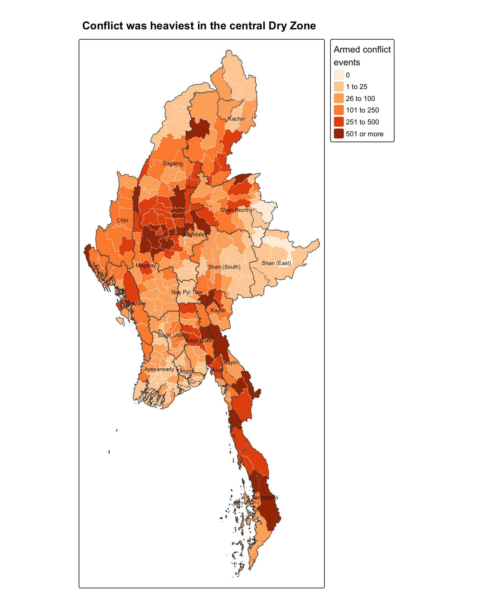
tm_shape(mmr_conflict) +
tm_polygons(fill = "total",
fill.scale = tm_scale_intervals(style = "fixed",
breaks = c(0, 1, 26, 101, 251, 501, 1100),
labels = c("0", "1 to 25", "26 to 100", "101 to 250", "251 to 500", "501 or more"),
values = "brewer.oranges"),
fill.legend = tm_legend(title = "Armed conflict events", position = tm_pos_in("left", "bottom"),
frame = FALSE),
col = "white", lwd = 0.2) +
state_borders + state_names +
tm_layout(frame = FALSE) +
tm_title("Conflict was heaviest in the central Dry Zone", size = 1.1, fontface = "bold")Most conflict happened in the central Dry Zone. The darkest block is the Dry Zone, made up of the Sagaing, Magway and Mandalay regions. Together they hold 43% of all events, and Sagaing alone holds 23%. Of the ten busiest townships, 6 are there, led by Monywa with 1,048 events. Outside the Dry Zone, the dark townships are along the borders, in Kachin around Hpakant, northern Shan, Kayin and Tanintharyi. The lightest areas are the Ayeyarwady delta, Nay Pyi Taw and Shan East, which had only 41 events in almost five years. Large townships are not darker because they are large. The correlation between area and event count is only 0.12.
How conflict changed over time
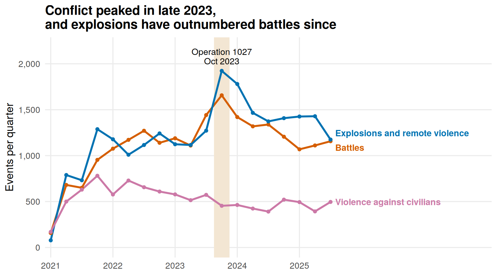
trend <- conflict_sf %>% st_drop_geometry() %>% count(quarter, type) %>% mutate(time = match(quarter, quarters))
trend_lab <- trend %>% filter(time == 19) %>%
mutate(n = n + case_when(type == "Battles" ~ -70, type == "Explosions and remote violence" ~ 70, TRUE ~ 0))
ggplot(trend, aes(time, n, colour = type)) +
annotate("rect", xmin = 11.5, xmax = 12.5, ymin = -Inf, ymax = Inf, fill = "#F3E6D3") +
annotate("text", x = 12, y = 2080, label = "Operation 1027\nOct 2023", size = 4, lineheight = 0.9) +
geom_line(linewidth = 1.2) + geom_point(size = 1.8) +
geom_text(data = trend_lab, aes(label = type), hjust = 0, nudge_x = 0.3, size = 4, fontface = "bold") +
scale_colour_manual(values = type_cols, guide = "none") +
scale_x_continuous(breaks = c(1, 5, 9, 13, 17), labels = c("2021", "2022", "2023", "2024", "2025"),
expand = expansion(mult = c(0.02, 0.55))) +
scale_y_continuous(limits = c(0, 2180), labels = scales::comma) +
labs(title = "Conflict peaked in late 2023,\nand explosions have outnumbered battles since",
x = NULL, y = "Events per quarter") +
theme_minimal(base_size = 14) +
theme(plot.title = element_text(face = "bold"), panel.grid.minor = element_blank())Conflict rose quickly in 2021 and has stayed high. Events went from 406 in the first quarter of 2021, when most resistance was still peaceful protest, to around 3,000 a quarter by the end of that year. The peak was Q4 2023, with 4,034 events, when an alliance of ethnic armed groups launched Operation 1027 in northern Shan. Since then the total has dropped back to around 3,000. The mix of types changed more than the total. Explosions and remote violence have outnumbered battles in every quarter since late 2023, so more of the fighting is done from a distance. Attacks on civilians peaked in late 2021 and have stayed at around 400 to 500 a quarter since. Because the national total goes up and down, Task 3 compares townships with each other in each quarter instead of tracking raw counts.
The change of weapon
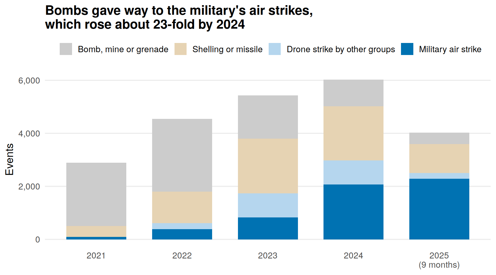
remote_mix <- conflict_sf %>% st_drop_geometry() %>%
filter(type == "Explosions and remote violence") %>%
mutate(weapon = case_when(military_air ~ "Military air strike",
sub_event_type == "Air/drone strike" ~ "Drone strike by other groups",
sub_event_type == "Shelling/artillery/missile attack" ~ "Shelling or missile",
TRUE ~ "Bomb, mine or grenade"),
weapon = factor(weapon, levels = c("Bomb, mine or grenade", "Shelling or missile",
"Drone strike by other groups", "Military air strike")),
year = if_else(year == 2025, "2025\n(9 months)", as.character(year))) %>%
count(year, weapon)
ggplot(remote_mix, aes(year, n, fill = weapon)) +
geom_col(width = 0.7) +
# soft colours for the background kinds, one strong colour for the kind the title is about
scale_fill_manual(values = c("grey80", "#E6D3B3", "#B5D6EE", "#0072B2"), name = NULL) +
scale_y_continuous(labels = scales::comma) +
labs(title = "Bombs gave way to the military's air strikes,\nwhich rose about 23-fold by 2024",
x = NULL, y = "Events") +
theme_minimal(base_size = 14) +
theme(plot.title = element_text(face = "bold"), legend.position = "top",
panel.grid.major.x = element_blank(), panel.grid.minor = element_blank())Explosions and remote violence changed from bombs to air strikes. In 2021 this type was mostly bombs, mines and grenades, 2,388 of them, while the military carried out only 91 air strikes. By 2024 the military’s air strikes had reached 2,074, about 23 times the 2021 level, and in the first nine months of 2025 they passed that total. Drone strikes by resistance groups went the other way. They rose to about 900 a year in 2023 and 2024, then fell to 221 in 2025. Air strikes can reach places far from the front line and are a main cause of harm to civilians, so Task 3 analyses the military’s air strikes in a cube of their own.
Where each type happened
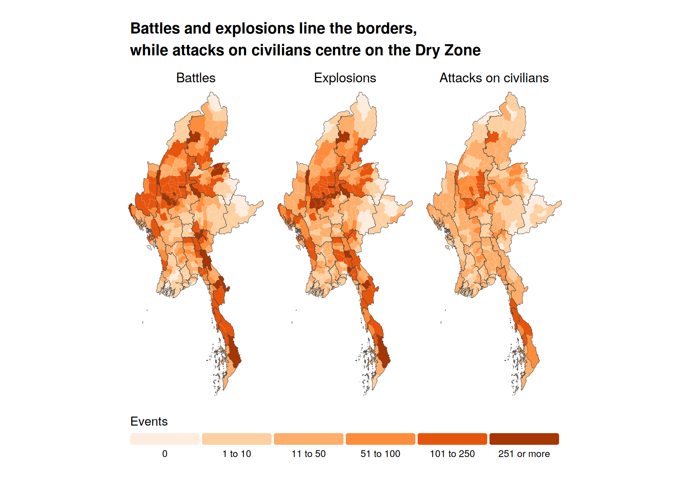
types_long <- mmr_conflict %>%
select(TS_PCODE, battles, remote, civilians) %>%
pivot_longer(c(battles, remote, civilians), names_to = "type", values_to = "events") %>%
mutate(type = factor(recode(type, battles = "Battles", remote = "Explosions and remote violence",
civilians = "Violence against civilians"),
levels = c("Battles", "Explosions and remote violence", "Violence against civilians"),
labels = c("Battles", "Explosions", "Attacks on civilians"))) # short panel labels
tm_shape(types_long) +
tm_polygons(fill = "events",
fill.scale = tm_scale_intervals(style = "fixed", breaks = c(0, 1, 11, 51, 101, 251, 700),
labels = c("0", "1 to 10", "11 to 50", "51 to 100", "101 to 250", "251 or more"),
values = "brewer.oranges"),
fill.legend = tm_legend(title = "Events", orientation = "landscape",
position = tm_pos_out("center", "bottom"), frame = FALSE),
col = "white", lwd = 0.1) +
tm_facets(by = "type", ncol = 3) +
tm_shape(mmr_st) + tm_borders(col = "grey25", lwd = 0.5) +
tm_layout(frame = FALSE, panel.label.size = 1.1, panel.label.bg.color = "white", panel.label.frame = FALSE) +
tm_title("Battles and explosions line the borders,\nwhile attacks on civilians centre on the Dry Zone",
size = 1.1, fontface = "bold")All three types are heaviest in the Dry Zone, but they differ elsewhere. Battles and explosions are also common along most borders, in Kachin, northern Shan, Kayah, Kayin and Tanintharyi, where ethnic armed groups and the military fight over territory. Violence against civilians is the smallest type, at 9,954 events, so its map is lighter. Almost half of it, 48%, is in the three Dry Zone regions. The mix of types also varies by place. In lowland areas with little fighting, attacks on civilians are a larger share of the violence, 41% in Bago West and 32% in Yangon, against 18% nationally. So Task 2 maps each type separately, and Bonus 1 tests whether these differences in mix form clusters.
How the map changed year by year
Counts are shown per quarter so that 2025, which has only three quarters, can be compared with full years.
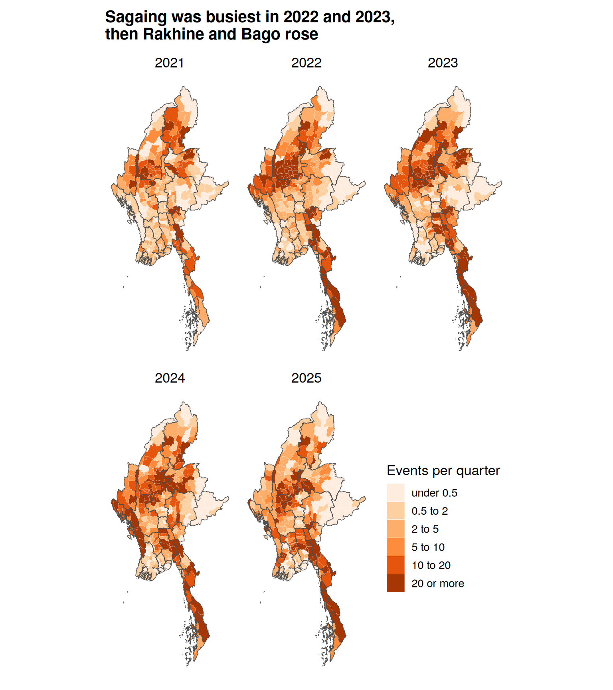
yearly <- cube_counts %>%
mutate(year = substr(quarter, 1, 4)) %>%
group_by(TS_PCODE, year) %>%
summarise(per_q = mean(total), .groups = "drop")
yearly_sf <- mmr_ts %>% select(TS_PCODE) %>% left_join(yearly, by = "TS_PCODE") %>%
mutate(band = cut(per_q, breaks = c(0, 0.5, 2, 5, 10, 20, Inf), right = FALSE,
labels = c("under 0.5", "0.5 to 2", "2 to 5", "5 to 10", "10 to 20", "20 or more")))
# ggplot is used here because it can place the legend in the empty sixth panel
ggplot(yearly_sf) +
geom_sf(aes(fill = band), colour = "white", linewidth = 0.05) +
geom_sf(data = mmr_st, fill = NA, colour = "grey30", linewidth = 0.25) +
scale_fill_brewer(palette = "Oranges", name = "Events per quarter", drop = FALSE) +
facet_wrap(~ year, ncol = 3) +
labs(title = "Sagaing was busiest in 2022 and 2023,\nthen Rakhine and Bago rose") +
theme_void(base_size = 13) +
theme(plot.title = element_text(face = "bold", size = 15, margin = margin(b = 12)),
strip.text = element_text(size = 13, margin = margin(b = 4)),
legend.position = c(0.84, 0.25), legend.key.size = unit(0.6, "cm"),
plot.margin = margin(10, 10, 10, 10),
plot.background = element_rect(fill = "white", colour = NA))The conflict spread to new areas while the old ones stayed active. In 2021 the darkest areas were Sagaing, Yangon and the Kachin and northern Shan borders. Sagaing was darkest in 2022 and 2023, at about 964 events a quarter across the region, and fell to about 425 a quarter in 2025. Other areas rose. Northern Shan flared in 2023 with Operation 1027. Rakhine rose from about 14 events a quarter in 2021 to 456 in 2024, as the Arakan Army took control of much of the state. Bago East and Bago West, between the Dry Zone and Yangon, rose every year. Yangon fell from about 222 events a quarter in 2021 to about 51 in 2025. These are raw counts, so Task 3 tests whether the changes are real trends.
Analytical Assumptions and Methodological Decisions
The maps above show counts that are skewed, uneven across townships and changing over time. The choices below take this into account. Each is explained again where it is used.
| Decision | Choice | Why | Risk, and how it is checked |
|---|---|---|---|
| Measure | Event counts, not rates | Counts are what the brief asks for, and no reliable township population for 2021 to 2025 is available | A busy town may look high because more happens there. Read with care |
| Neighbours | 8 nearest townships, by centre point | Townships range from under 1 km² to over 12,000 km², 3 are islands, and counts are skewed. The lecture notes advise about 8 neighbours in this case | Rural neighbours reach further than urban ones. Checked with queen contiguity |
| Weights | Row-standardised. The township itself is included for Gi* | Standard for local Moran’s I and Gi*, Getis and Ord, 1992 | Every neighbour counts the same |
| Null model | Conditional permutation, 999 shuffles, or 199 in Task 3 for the reason given there | Makes no assumption that counts are normally distributed | Permutation p-values vary slightly by run, so the seed is fixed |
| Significance | p < 0.05. Two-sided for local Moran’s I and Gi*. EHSA uses sfdep’s own per-quarter p-value | Set by the brief | With 330 tests some results are false alarms. Checked with the false discovery rate |
| Time step | Quarter | Enough events per bin, and 19 points for a trend test | Short bursts inside a quarter are smoothed |
| Trend test | Mann-Kendall on Gi* | Set by the brief | It assumes no serial correlation, which conflict series break. Checked with a corrected test |
Task 2. Local Measures of Spatial Association
Task 2 answers Q2 and the brief’s first objective. It finds where conflict clusters and which townships are unlike their neighbours.
Step 1. Choosing the neighbours
Every local statistic compares a township with its neighbours, so this choice affects every result. Two rules are compared. st_contiguity() makes townships that share a border neighbours. st_knn() takes the 8 townships whose centre points are nearest, using st_point_on_surface() so that every point lies inside its own township.
queen contiguity against 8 nearest neighbours
centres <- st_point_on_surface(st_geometry(mmr_conflict))
nb_queen <- st_contiguity(mmr_conflict, queen = TRUE)
nb_knn <- st_knn(centres, k = 8)
nb_summary <- function(nb, rule) {
n <- spdep::card(nb)
tibble(rule = rule, min = min(n), median = median(n), max = max(n), no_neighbour = sum(n == 0),
separate_groups = spdep::n.comp.nb(nb)$nc)
}
bind_rows(nb_summary(nb_queen, "Queen contiguity"), nb_summary(nb_knn, "8 nearest neighbours")) %>%
kable(col.names = c("Rule", "Fewest neighbours", "Median", "Most", "Townships with none", "Separate groups"))| Rule | Fewest neighbours | Median | Most | Townships with none | Separate groups |
|---|---|---|---|---|---|
| Queen contiguity | 0 | 5 | 11 | 3 | 4 |
| 8 nearest neighbours | 8 | 8 | 8 | 0 | 1 |
Queen contiguity leaves 3 island townships, Chaungzon, Munaung, Cocokyun, with no neighbour, and breaks Myanmar into pieces that are not connected. Townships also vary greatly in size, and the counts are skewed. For this situation the Lesson 5 notes, Kam, 2026b, recommend nearest neighbours, about eight when values are skewed. So 8 nearest neighbours are used throughout, and queen contiguity is used as a check in Step 6. Section 10.5.1.2 of the course text builds Gi* weights the same way, include_self(st_knn()) with row-standardised weights, Kam, 2026d.
weights
wm_knn <- mmr_conflict %>%
mutate(nb = nb_knn, wt = st_weights(nb, style = "W"), .before = 1) # for local Moran's I
wm_gi <- mmr_conflict %>%
mutate(nb = include_self(nb_knn), wt = st_weights(nb, style = "W"), .before = 1) # for Gi*, self includedStep 2. Is there clustering at all?
Local statistics are only worth reading if the map is clustered overall. Lesson 5 gives three global measures for this. Global Moran’s I compares each township with the national average and is above 0 when similar values are near each other. Global Geary’s c compares each township directly with its neighbours and is below 1 when they are alike. Getis-Ord global G tests whether the high values are near each other, and uses binary weights, as its formula expects. The null model is 999 permutations, or the randomisation test for G.
global Moran's I, Geary's c and G for the four variables
var_names <- c(total = "Total", battles = "Battles", remote = "Explosions and remote violence",
civilians = "Violence against civilians")
set.seed(1234)
global_tab <- map_dfr(names(var_names), function(v) {
m <- global_moran_perm(wm_knn[[v]], wm_knn$nb, wm_knn$wt, nsim = 999, alternative = "greater")
c <- global_c_perm(wm_knn[[v]], wm_knn$nb, wm_knn$wt, nsim = 999)
g <- global_g_test(wm_knn[[v]], wm_knn$nb, st_weights(wm_knn$nb, style = "B"))
tibble(variable = var_names[[v]], moran_i = round(m$statistic, 2),
moran_p = sprintf("%.3f", m$p.value),
geary_c = round(c$statistic, 2), geary_p = sprintf("%.3f", c$p.value),
g_z = round(g$statistic[[1]], 1), g_p = format.pval(g$p.value, eps = 0.001, digits = 2))
})
global_tab %>% kable(col.names = c("Variable", "Moran's I", "p-value", "Geary's c", "p-value", "Global G, z", "p-value"))| Variable | Moran’s I | p-value | Geary’s c | p-value | Global G, z | p-value |
|---|---|---|---|---|---|---|
| Total | 0.43 | 0.001 | 0.59 | 0.001 | 15.6 | <0.001 |
| Battles | 0.40 | 0.001 | 0.60 | 0.001 | 14.4 | <0.001 |
| Explosions and remote violence | 0.40 | 0.001 | 0.61 | 0.001 | 15.2 | <0.001 |
| Violence against civilians | 0.42 | 0.001 | 0.60 | 0.001 | 15.9 | <0.001 |
All four variables are clearly clustered. Moran’s I is between 0.40 and 0.43, and none of the 999 random shuffles came close. The null hypothesis of random placement is rejected for every variable at p = 0.001, the smallest p-value 999 shuffles can give. As in chapter 9 of the course text, this is a one-sided test for clustering. Geary’s c is between 0.59 and 0.61, well below 1, so neighbouring townships are alike when compared directly. As the lecture notes say, a high Moran’s I goes with a low Geary’s c, and here they agree. Global G is strongly positive, with z-scores of 14 to 16, so high counts in particular are near each other. The four variables give similar results, so no single type drives the pattern.
How far does the clustering reach?
The neighbour rule sets the scale of every local statistic, so it helps to know how far the clustering reaches. A spatial correlogram, sp.correlogram() from spdep as in chapter 9 of the course text, repeats Moran’s I for neighbours of neighbours. Order 1 is the 8 nearest townships, order 2 adds their 8 nearest, and so on. The table also gives the typical distance between a township and its neighbours at each order.
Moran's I correlogram over six orders of neighbours
corr <- sp.correlogram(nb_knn, mmr_conflict$total, order = 6, method = "I", style = "W", zero.policy = TRUE)
lags <- nblag(nb_knn, 6)
corr_tab <- tibble(order = 1:6,
distance_km = map_dbl(lags, ~ median(unlist(nbdists(.x, st_coordinates(centres)))) / 1000),
moran_i = corr$res[, 1],
p = 2 * pnorm(-abs((corr$res[, 1] - corr$res[, 2]) / sqrt(corr$res[, 3]))))
corr_tab %>%
mutate(distance_km = round(distance_km), moran_i = round(moran_i, 2),
p = format.pval(p, eps = 0.001, digits = 2)) %>%
kable(col.names = c("Order of neighbours", "Median distance, km", "Moran's I", "p-value"))| Order of neighbours | Median distance, km | Moran’s I | p-value |
|---|---|---|---|
| 1 | 51 | 0.43 | <0.001 |
| 2 | 101 | 0.32 | <0.001 |
| 3 | 153 | 0.21 | <0.001 |
| 4 | 206 | 0.09 | <0.001 |
| 5 | 259 | -0.02 | 0.28 |
| 6 | 315 | -0.06 | <0.001 |
Clustering reaches about 210 km and then fades. Moran’s I is highest for the nearest townships, at 0.43, and drops with each order, but stays significant up to order 4, about 210 km away. At order 5 it is close to zero, and at order 6 it is slightly negative, because townships that far apart are on opposite sides of a cluster. The 8 nearest neighbours are a median of 51 km away, well inside this range, so each township is compared with places that share its level of conflict. A much wider neighbourhood would merge separate clusters. The next step finds where the clusters are.
Step 3. Clusters and outliers, local Moran’s I
- Question
- Which townships sit in a cluster of high or low conflict, and which are outliers, high among low or low among high?
- Method, and why
-
Local Moran’s I by Anselin, 1995, run with
local_moran()from sfdep. It breaks global Moran’s I into one value per township, so it finds both clusters and outliers, which the first objective asks for. - Null model
- Conditional permutation. Each township’s own count is held fixed while the counts of the other townships are shuffled 999 times.
- Assumptions
- The 8 nearest townships are the right comparison group. Counts are not rates, so a busy town may look high because more happens there.
- Settings
-
Total events, row-standardised weights, 999 permutations, p < 0.05 from the permutation p-value,
p_ii_sim. The quadrant uses the mean, as in the course. A median split is tested in Step 6.
local Moran's I
set.seed(1234)
lisa <- wm_knn %>%
mutate(local_moran = local_moran(total, nb, wt, nsim = 999), .before = 1) %>%
unnest(local_moran) %>%
mutate(quadrant = if_else(p_ii_sim < 0.05, as.character(mean), "Not significant"),
quadrant = factor(quadrant, levels = c("High-High", "Low-Low", "High-Low", "Low-High", "Not significant")))
lisa %>% st_drop_geometry() %>% count(quadrant, .drop = FALSE) %>%
kable(col.names = c("LISA class", "Townships"))| LISA class | Townships |
|---|---|
| High-High | 35 |
| Low-Low | 72 |
| High-Low | 0 |
| Low-High | 8 |
| Not significant | 215 |
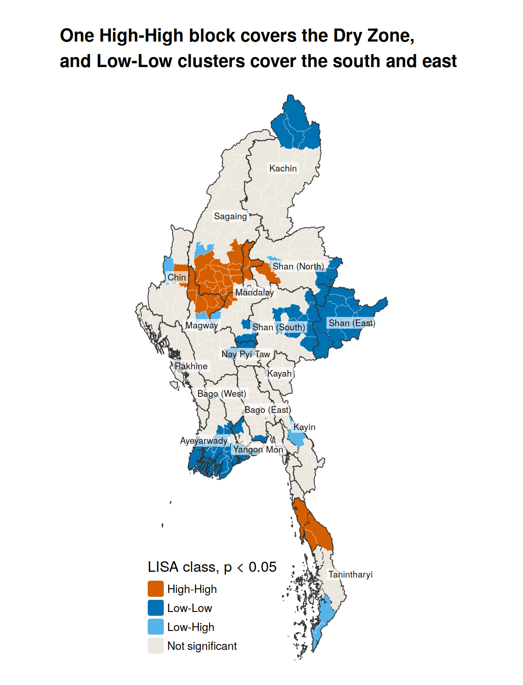
lisa_cols <- c("High-High" = col_high, "Low-Low" = col_low, "High-Low" = col_hl,
"Low-High" = col_lh, "Not significant" = col_ns)
tm_shape(lisa) +
tm_polygons(fill = "quadrant",
fill.scale = tm_scale_categorical(values = lisa_cols, levels.drop = TRUE),
fill.legend = tm_legend(title = "LISA class, p < 0.05", position = tm_pos_in("left", "bottom"),
frame = FALSE),
col = "white", lwd = 0.2) +
state_borders + state_names +
tm_layout(frame = FALSE) +
tm_title("One High-High block covers the Dry Zone,\nand Low-Low clusters cover the south and east",
size = 1.1, fontface = "bold")The Dry Zone is one large cluster, and no busy township stands alone. For 115 townships the null hypothesis of random placement is rejected at p < 0.05. 35 are High-High, busy townships with busy neighbours, and 28 of them form one block across Sagaing, Magway and Mandalay, around Monywa, Shwebo, Myaing and Pakokku. A smaller High-High group of 4 sits around Dawei in Tanintharyi. Hakha in Chin, Shwegyin in Bago East and Kyaukme in northern Shan are single High-High townships. 72 townships are Low-Low, 23 in Yangon, 17 in the Ayeyarwady delta, 10 in Shan East, and the rest in southern Shan and around Nay Pyi Taw. No township is a High-Low outlier, a busy township among quiet neighbours. The 8 Low-High outliers are quieter townships at the edge of hot areas, such as Nyaung-U and Seikphyu next to the Dry Zone block. They may be safer places, or places where events go unreported, but Step 6 shows they are the least stable result. A high count alone does not make a cluster. Kawkareik in Kayin, the second busiest township, is not significant because six of its eight nearest neighbours are quiet townships in Mon.
The Moran scatterplot behind the map
The LISA map comes from a Moran scatterplot, as in chapter 10 of the course text, Kam, 2026d. Each point is a township. The horizontal axis is its own standardised count. The vertical axis is the average standardised count of its 8 neighbours, its spatial lag from st_lag(). The four quarters of the plot are the four LISA classes. Coloured points are significant.
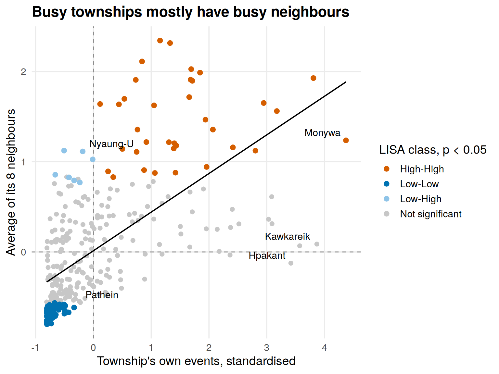
ms <- lisa %>% st_drop_geometry() %>%
mutate(z_total = as.vector(scale(total)),
z_lag = st_lag(z_total, nb, wt)) # lag of the standardised value, so the slope equals Moran's I
ms_lab <- ms %>% filter(TS %in% c("Monywa", "Kawkareik", "Nyaung-U", "Pathein", "Hpakant"))
ggplot(ms, aes(z_total, z_lag)) +
geom_hline(yintercept = 0, colour = "grey55", linetype = 2) +
geom_vline(xintercept = 0, colour = "grey55", linetype = 2) +
geom_point(data = filter(ms, quadrant == "Not significant"), aes(colour = quadrant), size = 2) +
geom_point(data = filter(ms, quadrant != "Not significant"), aes(colour = quadrant), size = 2.4) +
geom_smooth(method = "lm", se = FALSE, colour = "black", linewidth = 0.7) +
geom_text(data = ms_lab, aes(label = TS, hjust = if_else(z_total > 2, 1.15, -0.15)), size = 4, vjust = -0.6) +
# grey for points, since the beige map fill is too pale to see as a dot
scale_colour_manual(values = replace(lisa_cols, "Not significant", "grey78"), drop = TRUE,
breaks = c("High-High", "Low-Low", "Low-High", "Not significant"),
name = "LISA class, p < 0.05") +
labs(title = "Busy townships mostly have busy neighbours",
x = "Township's own events, standardised", y = "Average of its 8 neighbours") +
theme_minimal(base_size = 14) +
theme(plot.title = element_text(face = "bold"), legend.position = "right", panel.grid.minor = element_blank())The slope of the line is the global Moran’s I. The black line has a slope of 0.43, the same as the global Moran’s I in Step 2, as the lecture shows. Most significant points are in the High-High and Low-Low quarters. Monywa, the busiest township, is far to the right with busy neighbours. Kawkareik is also busy, but its neighbours average close to zero, so it is not significant. Nyaung-U, a Low-High outlier, is on the left with busy neighbours. No significant point is in the High-Low quarter.
Step 4. Hot and cold spots, Getis-Ord Gi*
- Question
- Where do whole neighbourhoods carry far more conflict than chance, and where far less?
- Method, and why
-
Getis-Ord Gi* by Getis and Ord, 1992, and Ord and Getis, 1995, run with
local_gstar_perm()from sfdep. Unlike local Moran’s I, it includes the township itself, so it measures a whole neighbourhood. EHSA in Task 3 is also built on Gi*. - Null model
- The same conditional permutation, 999 shuffles.
- Assumptions
- As for local Moran’s I. Gi* finds hot and cold spots but not outliers.
- Settings
-
Total events, 8 nearest neighbours plus the township itself, row-standardised weights, two-sided permutation p-value,
p_sim, as in the course, p < 0.05. A significant township is a hot spot when its Gi* is positive and a cold spot when it is negative, as the lecture defines them. The hands-on code uses theclustercolumn instead, but that column only says whether the township itself is above average. For a few significant townships it disagrees with the sign of Gi* and would turn hot neighbourhoods into cold spots, so the lecture rule is used.
local Gi*
set.seed(1234)
hcsa <- wm_gi %>%
mutate(local_gi = local_gstar_perm(total, nb, wt, nsim = 999), .before = 1) %>%
unnest(local_gi) %>%
mutate(spot = case_when(p_sim < 0.01 & gi_star > 0 ~ "Hot spot, p < 0.01",
p_sim < 0.05 & gi_star > 0 ~ "Hot spot, p < 0.05",
p_sim < 0.01 & gi_star < 0 ~ "Cold spot, p < 0.01",
p_sim < 0.05 & gi_star < 0 ~ "Cold spot, p < 0.05",
TRUE ~ "Not significant"),
spot = factor(spot, levels = c("Hot spot, p < 0.01", "Hot spot, p < 0.05", "Cold spot, p < 0.05",
"Cold spot, p < 0.01", "Not significant")))
hcsa %>% st_drop_geometry() %>% count(spot, .drop = FALSE) %>% kable(col.names = c("Gi* class", "Townships"))| Gi* class | Townships |
|---|---|
| Hot spot, p < 0.01 | 26 |
| Hot spot, p < 0.05 | 14 |
| Cold spot, p < 0.05 | 26 |
| Cold spot, p < 0.01 | 49 |
| Not significant | 215 |
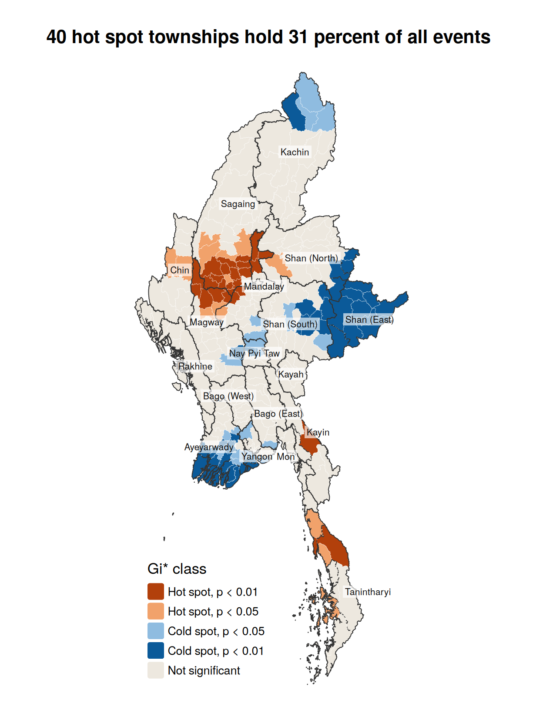
gi_cols <- c("Hot spot, p < 0.01" = "#B2400B", "Hot spot, p < 0.05" = "#F1A26B",
"Cold spot, p < 0.05" = "#8FBCE0", "Cold spot, p < 0.01" = "#0B5A99", "Not significant" = col_ns)
tm_shape(hcsa) +
tm_polygons(fill = "spot",
fill.scale = tm_scale_categorical(values = gi_cols, levels.drop = TRUE),
fill.legend = tm_legend(title = "Gi* class", position = tm_pos_in("left", "bottom"), frame = FALSE),
col = "white", lwd = 0.2) +
state_borders + state_names +
tm_layout(frame = FALSE) +
tm_title(paste0(sum(hq$hot), " hot spot townships hold ", round(100 * hot_share), "% of all events"),
size = 1.1, fontface = "bold")Hot spots cover a small area but hold nearly a third of all events. 40 townships are hot spots, 26 of them at p < 0.01, and together they hold 31% of all events. 31 of them are in the Dry Zone, and the Sagaing part alone holds 16% of all events. The rest are 5 around Dawei in Tanintharyi, 2 around Hakha in Chin, and single townships in Kayin and northern Shan. The hot spots are nearly the same townships as the High-High cluster, so the two statistics agree. 75 townships are cold spots, mostly 23 in Yangon, 18 in the Ayeyarwady delta and 17 in Shan East and Shan South. Busy townships elsewhere, such as Kawkareik, Hpakant and Kyaukkyi, are not hot spots because their neighbours are quieter. They are local flashpoints, not part of a wider hot area. Using the hands-on cluster column would have given 6 significant townships the wrong label, all of them quieter townships inside hot neighbourhoods.
Step 5. Clusters by type of conflict
The total can hide differences between types, so local Moran’s I and Gi* are run again for each type with the same settings.
local Moran's I and Gi* for each type
lmsa_types <- map_dfr(c("battles", "remote", "civilians"), function(v) {
set.seed(1234)
lm_v <- local_moran(wm_knn[[v]], wm_knn$nb, wm_knn$wt, nsim = 999)
set.seed(1234)
gi_v <- local_gstar_perm(wm_gi[[v]], wm_gi$nb, wm_gi$wt, nsim = 999)
mmr_conflict %>% select(TS_PCODE, TS, ST) %>%
mutate(type = var_names[[v]],
quadrant = if_else(lm_v$p_ii_sim < 0.05, as.character(lm_v$mean), "Not significant"),
spot = case_when(gi_v$p_sim < 0.05 & gi_v$gi_star > 0 ~ "Hot spot",
gi_v$p_sim < 0.05 & gi_v$gi_star < 0 ~ "Cold spot",
TRUE ~ "Not significant"))
}) %>%
mutate(type = factor(type, levels = var_names[c("battles", "remote", "civilians")]),
quadrant = factor(quadrant, levels = names(lisa_cols)),
spot = factor(spot, levels = c("Hot spot", "Cold spot", "Not significant")))
lmsa_types %>% st_drop_geometry() %>% count(type, quadrant, .drop = FALSE) %>%
pivot_wider(names_from = quadrant, values_from = n, values_fill = 0) %>%
left_join(lmsa_types %>% st_drop_geometry() %>% count(type, spot, .drop = FALSE) %>%
pivot_wider(names_from = spot, values_from = n, values_fill = 0) %>% select(-`Not significant`),
by = "type") %>%
kable(col.names = c("Type", "High-High", "Low-Low", "High-Low", "Low-High", "Not significant, LISA",
"Gi* hot spots", "Gi* cold spots"))| Type | High-High | Low-Low | High-Low | Low-High | Not significant, LISA | Gi* hot spots | Gi* cold spots |
|---|---|---|---|---|---|---|---|
| Battles | 42 | 91 | 0 | 11 | 186 | 50 | 89 |
| Explosions and remote violence | 30 | 75 | 0 | 7 | 218 | 39 | 72 |
| Violence against civilians | 43 | 62 | 1 | 6 | 218 | 50 | 66 |
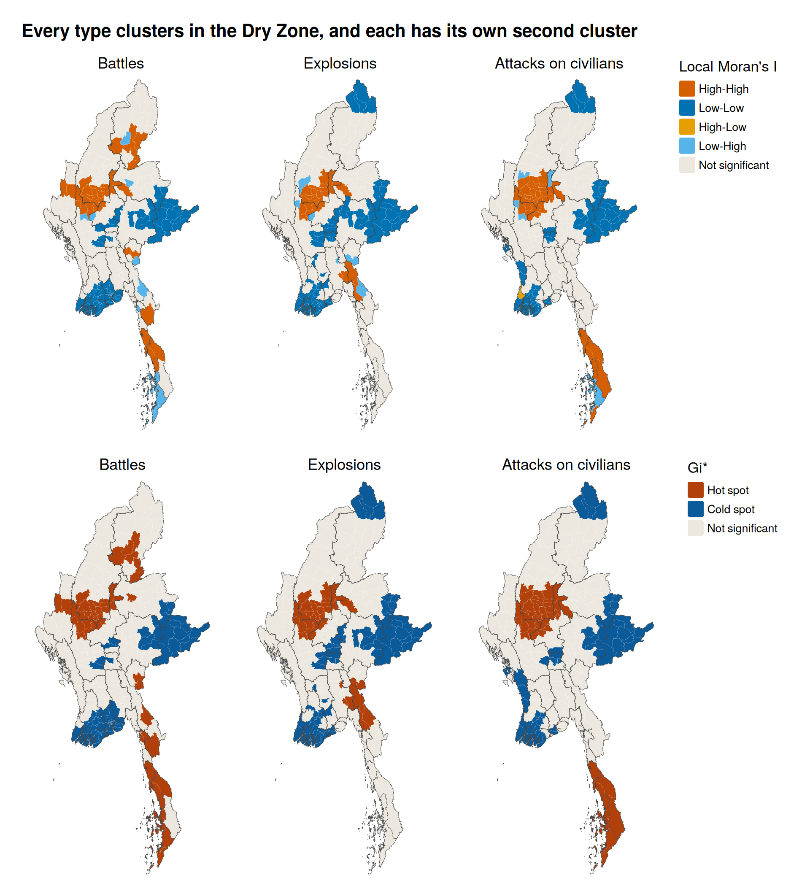
short_type <- function(x) x %>% mutate(type = factor(type, levels = levels(type),
labels = c("Battles", "Explosions", "Attacks on civilians")))
m_lisa <- tm_shape(short_type(lmsa_types)) +
tm_polygons(fill = "quadrant",
fill.scale = tm_scale_categorical(values = lisa_cols, levels.drop = TRUE),
fill.legend = tm_legend(title = "Local Moran's I", position = tm_pos_out("right", "center"), frame = FALSE),
col = "white", lwd = 0.1) +
tm_facets(by = "type", ncol = 3) +
tm_shape(mmr_st) + tm_borders(col = "grey25", lwd = 0.5) +
tm_layout(frame = FALSE, panel.label.size = 1.1, panel.label.bg.color = "white", panel.label.frame = FALSE) +
tm_title("Every type clusters in the Dry Zone, and each has its own second cluster", size = 1.1, fontface = "bold")
m_gi <- tm_shape(short_type(lmsa_types)) +
tm_polygons(fill = "spot",
fill.scale = tm_scale_categorical(values = c("Hot spot" = "#B2400B", "Cold spot" = "#0B5A99",
"Not significant" = col_ns)),
fill.legend = tm_legend(title = "Gi*", position = tm_pos_out("right", "center"), frame = FALSE),
col = "white", lwd = 0.1) +
tm_facets(by = "type", ncol = 3) +
tm_shape(mmr_st) + tm_borders(col = "grey25", lwd = 0.5) +
tm_layout(frame = FALSE, panel.label.size = 1.1, panel.label.bg.color = "white", panel.label.frame = FALSE)
tmap_arrange(m_lisa, m_gi, nrow = 2)Every type clusters in the Dry Zone, and each has a different second cluster. All three types have a High-High cluster and a block of Gi* hot spots in the Dry Zone. Battles are the most widespread, with 50 hot spots including groups around Myitkyina and Mohnyin in Kachin, in Kayah, and down Tanintharyi, where ethnic armed groups fight the military for territory. Explosions and remote violence have the fewest hot spots, 39, with a second group where Bago East meets Kayin, around Shwegyin, Nyaunglebin and Hpa-An. Violence against civilians has 50 hot spots, almost all in the Dry Zone and Tanintharyi. It also has the only High-Low outlier under the mean split, Pathein in the Ayeyarwady delta, which had more attacks on civilians than its quiet neighbours. The cold areas are the same for all three types. Because the second clusters differ by type, Bonus 1 looks at the mix of types directly.
Step 6. How much to trust these maps
Three checks test whether the maps depend on choices made above.
- Many tests. Testing 330 townships at p < 0.05 would flag about 16 by chance alone.
p.adjust()with the false discovery rate method, FDR, by Benjamini and Hochberg, 1995, counts how many results survive. - Neighbour rule. Local Moran’s I is rerun with queen contiguity, with each island linked to its nearest township so that none is left out.
- Mean or median. Counts are skewed, so “high” and “low” are re-cut at the median instead of the mean.
robustness checks
fdr_tab <- tibble(
map = c("Local Moran's I, total", "Gi*, total"),
p_below_05 = c(sum(lisa$p_ii_sim < 0.05), sum(hcsa$p_sim < 0.05)),
still_after_fdr = c(sum(p.adjust(lisa$p_ii_sim, "fdr") < 0.05), sum(p.adjust(hcsa$p_sim, "fdr") < 0.05)))
fdr_tab %>% kable(col.names = c("Map", "Significant at p < 0.05", "Still significant after FDR"))| Map | Significant at p < 0.05 | Still significant after FDR |
|---|---|---|
| Local Moran’s I, total | 115 | 85 |
| Gi*, total | 115 | 85 |
nb_queen_fix <- nb_queen
iso <- which(spdep::card(nb_queen) == 0)
nn1 <- st_knn(centres, k = 1)
for (i in iso) {
j <- nn1[[i]]
nb_queen_fix[[i]] <- j
nb_queen_fix[[j]] <- sort(unique(c(nb_queen_fix[[j]][nb_queen_fix[[j]] != 0], i)))
}
set.seed(1234)
lisa_q <- local_moran(mmr_conflict$total, nb_queen_fix, st_weights(nb_queen_fix), nsim = 999)
quad_q <- if_else(lisa_q$p_ii_sim < 0.05, as.character(lisa_q$mean), "Not significant")
quad_med <- if_else(lisa$p_ii_sim < 0.05, as.character(lisa$median), "Not significant")
tibble(class = c("High-High", "Low-Low", "High-Low", "Low-High"),
main = map_int(class, ~ sum(lisa$quadrant == .x)),
queen = map_int(class, ~ sum(quad_q == .x)),
queen_same = map_int(class, ~ sum(quad_q == .x & lisa$quadrant == .x)),
median = map_int(class, ~ sum(quad_med == .x))) %>%
kable(col.names = c("LISA class", "Main result", "Queen contiguity", "Same township in both", "Median split"))| LISA class | Main result | Queen contiguity | Same township in both | Median split |
|---|---|---|---|---|
| High-High | 35 | 33 | 29 | 39 |
| Low-Low | 72 | 50 | 46 | 71 |
| High-Low | 0 | 0 | 0 | 1 |
| Low-High | 8 | 1 | 1 | 4 |
lisa %>% st_drop_geometry() %>% filter(quad_med == "High-Low") %>% select(TS, ST, total) %>%
kable(col.names = c("High-Low under the median split", "State or region", "Events"))| High-Low under the median split | State or region | Events |
|---|---|---|
| Thaketa | Yangon | 96 |
The main clusters hold, and the outliers are less certain. After the FDR correction, 85 of 115 local Moran’s I results and 85 of 115 Gi* results remain, so most of the pattern is not caused by running many tests. Under queen contiguity, 29 of the 35 High-High townships keep their class, and no township switches between high and low. The Dry Zone cluster is the same under both rules. The other classes change more. Low-Low townships fall from 72 to 50, and only 1 of the 8 Low-High outliers keep their class. An outlier depends on which townships count as its neighbours, so it is most affected by that choice. The median split also affects outliers. A few very busy townships pull the mean up, so under the mean split Thaketa counts as “low”. Against the median it is a little busier than usual and becomes a High-Low outlier. Since its label depends on the cut-off, Thaketa is a borderline case, not a clear flashpoint.
Task 3. Emerging Hot Spot Analysis
Task 3 answers Q3 and the brief’s second objective. Task 2 showed where conflict clustered over the whole period. Task 3 looks at how those clusters changed from quarter to quarter.
Step 1. Neighbours and weights in the cube
The 8 nearest neighbours from Task 2, plus the township itself, are added to the cube. set_nbs() and set_wts() copy them to every quarter, so every quarter uses the same neighbours. The course example in chapter 11 uses queen contiguity with inverse distance weights, Kam, 2026d. This report keeps the Task 2 neighbours instead, for two reasons. A hot spot then means the same thing in both tasks, so the results can be compared. And contiguity would leave three islands with no neighbour. Chapter 10 of the course text builds Gi* weights from nearest neighbours in the same way.
neighbours and weights in the cube
conflict_nb <- conflict_st %>%
activate("geometry") %>%
mutate(nb = include_self(st_knn(st_point_on_surface(geometry), k = 8)),
wt = st_weights(nb, style = "W"),
.before = 1) %>%
set_nbs("nb") %>%
set_wts("wt")Step 2. Gi* for every quarter, and the Mann-Kendall test
As in the course, Gi* is computed for total events in each quarter with local_gstar_perm(), so each township has a series of 19 Gi* values. Task 3 uses 199 permutations instead of 999, because Gi* is computed for 19 quarters and, in Step 3, for five variables. The course text uses 99. With 199 the smallest possible p-value is 0.005, well below 0.05. The Mann-Kendall test, MannKendall() from Kendall, tests whether a series rises or falls more consistently than chance would give. Its tau goes from −1, always falling, to +1, always rising. The null hypothesis is that there is no monotonic trend.
Gi* by quarter and the Mann-Kendall test for each township
set.seed(1234)
gi_stars <- conflict_nb %>%
group_by(time) %>%
mutate(gi_star = local_gstar_perm(total, nb, wt, nsim = 199)) %>%
tidyr::unnest(gi_star) %>%
ungroup()
mk <- gi_stars %>%
group_by(TS_PCODE) %>%
summarise(mk = list(unclass(Kendall::MannKendall(gi_star)))) %>%
tidyr::unnest_wider(mk) %>%
left_join(st_drop_geometry(mmr_ts) %>% select(TS_PCODE, TS, ST), by = "TS_PCODE")
mk %>% filter(sl < 0.05) %>%
mutate(direction = if_else(tau > 0, "Rising", "Falling")) %>%
count(direction, ST) %>%
group_by(direction) %>% arrange(desc(n), .by_group = TRUE) %>%
summarise(townships = sum(n), led_by = paste(head(ST, 4), head(n, 4), collapse = ", ")) %>%
kable(col.names = c("Significant trend", "Townships", "Led by"))| Significant trend | Townships | Led by |
|---|---|---|
| Falling | 91 | Yangon 41, Mandalay 10, Sagaing 10, Shan North 7 |
| Rising | 49 | Bago West 12, Bago East 9, Magway 7, Mandalay 6 |
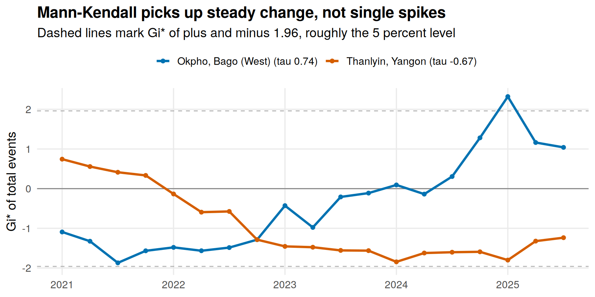
pair <- bind_rows(mk %>% filter(sl < 0.05) %>% slice_max(tau, n = 1, with_ties = FALSE),
mk %>% filter(sl < 0.05) %>% slice_min(tau, n = 1, with_ties = FALSE)) %>%
mutate(label = paste0(TS, ", ", ST, "\n", if_else(tau > 0, "rising", "falling"), ", tau ", sprintf("%.2f", tau)))
pair_series <- gi_stars %>% filter(TS_PCODE %in% pair$TS_PCODE) %>%
left_join(pair %>% select(TS_PCODE, label), by = "TS_PCODE")
# warm for the township heating up, blue for the one cooling down, labelled at the line ends instead of a legend
ggplot(pair_series, aes(time, gi_star, colour = label)) +
geom_hline(yintercept = 0, colour = "grey50") +
geom_hline(yintercept = c(-1.96, 1.96), colour = "grey70", linetype = "dashed") +
geom_line(linewidth = 1.2) + geom_point(size = 1.8) +
geom_text(data = filter(pair_series, time == 19), aes(label = label), hjust = 0, nudge_x = 0.4,
size = 4, fontface = "bold", lineheight = 0.9) +
scale_colour_manual(values = setNames(c(col_high, col_low), pair$label), guide = "none") +
scale_x_continuous(breaks = c(1, 5, 9, 13, 17), labels = c("2021", "2022", "2023", "2024", "2025"),
expand = expansion(mult = c(0.02, 0.32))) +
labs(title = "Mann-Kendall picks up steady change, not single spikes",
subtitle = "Dashed lines mark Gi* of plus and minus 1.96, roughly the 5% level",
x = NULL, y = "Gi* of total events") +
theme_minimal(base_size = 14) +
theme(plot.title = element_text(face = "bold"), panel.grid.minor = element_blank())The test measures direction of change, not how hot a township is. Okpho in Bago West has the strongest rise of all 330 townships. Its Gi* started below −1.5, a cold neighbourhood, and rose in most quarters until it passed the hot spot line in early 2025. Thanlyin, across the river from Yangon city, did the opposite, falling slowly from slightly above zero to near −2. Neither was a strong hot or cold spot for most of the period, but both trends are clear, with p well below 0.001. Across the country, 49 townships have a significant rise and 91 a significant fall. The largest groups of rising townships are in Bago West and Bago East, where Okpho is, and Yangon has the most falling ones. Gi* is measured against the whole country each quarter, so a falling Gi* means a neighbourhood has a smaller share of the conflict, not that it is at peace.
Step 3. Emerging hot spot classes
emerging_hotspot_analysis() from sfdep, documented by Parry, 2023, repeats the Gi* step with a time lag, so the neighbours’ values in the previous quarter also count. It runs the Mann-Kendall test on that series and gives each township one of the patterns in the Lesson 5 notes. It is run five times, once for each conflict variable and once for the military’s air strikes. include_gi = TRUE keeps the quarterly Gi* values so they can be checked.
EHSA for every conflict variable
ehsa_vars <- c(total = "All armed conflict", battles = "Battles",
remote = "Explosions and remote violence", civilians = "Violence against civilians",
military_air = "Military air strikes")
run_ehsa <- function(v) {
set.seed(1234)
e <- emerging_hotspot_analysis(conflict_nb, .var = v, k = 1, nsim = 199, threshold = 0.05,
nb_col = "nb", wt_col = "wt", include_gi = TRUE)
gi <- bind_cols(conflict_nb %>% as_tibble() %>% select(TS_PCODE, time),
attr(e, "gi_star") %>% as_tibble() %>% select(gi_star, p_sim))
list(ehsa = as_tibble(e), gi = gi)
}
ehsa_all <- map(names(ehsa_vars), run_ehsa) %>% set_names(names(ehsa_vars))A check that each result sits on the right township
emerging_hotspot_analysis() labels its results in the row order of the boundary file, but calculates them in alphabetical order of township code. The two only match when the boundary is sorted by code. A first run without sorting put cold spots over Sagaing, the most violent area in Figure 1, which showed the problem. This is why mmr_ts was sorted in Task 1. Two checks confirm the fix. Re-running the Mann-Kendall test on the saved Gi* series must give exactly sfdep’s tau. And sfdep’s tau should be close to the Step 2 tau, which uses the same counts without the time lag.
check that EHSA results line up with townships
own <- ehsa_all$total$gi %>% arrange(TS_PCODE, time) %>% group_by(TS_PCODE) %>%
summarise(tau_own = Kendall::MannKendall(gi_star)$tau[1])
chk <- ehsa_all$total$ehsa %>% select(TS_PCODE = location, tau) %>%
left_join(own, by = "TS_PCODE") %>% left_join(mk %>% select(TS_PCODE, tau_step2 = tau), by = "TS_PCODE")
tibble(check = c("Largest gap between sfdep's tau and the re-run tau",
"Correlation with the Step 2 tau, which has no time lag"),
value = c(signif(max(abs(chk$tau - chk$tau_own)), 2), round(cor(chk$tau, chk$tau_step2), 2))) %>%
kable(col.names = c("Check", "Value"))| Check | Value |
|---|---|
| Largest gap between sfdep’s tau and the re-run tau | 0.00 |
| Correlation with the Step 2 tau, which has no time lag | 0.97 |
The gap is zero, so every result belongs to the right township. The correlation with Step 2 is high but not perfect, as expected, because EHSA also uses the previous quarter’s values.
A check against the lecture definitions
sfdep’s source code has two rules that differ from the definitions in the Lesson 5 notes, and there is one case where the lecture definitions overlap.
| Pattern | Lecture definition | sfdep rule | Effect |
|---|---|---|---|
| Sporadic hot or cold spot | Must be significant in the final quarter | Does not check the final quarter | Fading townships are labelled sporadic |
| Intensifying hot spot | Hot in at least 90% of quarters | Significant in 90% of quarters, hot or cold | A cold spot that is warming can be labelled an intensifying hot spot |
| Consecutive and oscillating hot spot | A township that was cold, then hot to the end, fits both definitions | Calls it oscillating. It only calls a township consecutive if it was never significant, hot or cold, before its final hot run | The lecture gives no order, so sfdep’s choice is kept and applied to every township |
The report keeps sfdep’s classes but corrects the first two cases with the lecture rules, applied to sfdep’s own Gi* values. lecture_class() below codes the lecture tables, and follows sfdep’s order where they overlap.
lecture definitions, applied to sfdep's own Gi* values
lecture_class <- function(gs, sig, tau, tau_p, alpha = 0.05) {
n <- length(gs); hot <- sig & gs > 0; cold <- sig & gs < 0
final_run <- function(x) { r <- rle(x); if (!tail(r$values, 1)) 0 else tail(r$lengths, 1) }
if (hot[n]) {
before <- hot[seq_len(n - final_run(hot))]
if (sum(hot) == 1) return("New hotspot")
if (final_run(hot) >= 2 && !any(sig[seq_len(n - final_run(hot))]) && mean(hot) < 0.9) return("Consecutive hotspot")
if (mean(hot) >= 0.9) return(if (tau_p >= alpha) "Persistent hotspot" else if (tau > 0) "Intensifying hotspot" else "Diminishing hotspot")
return(if (any(cold)) "Oscillating hotspot" else "Sporadic hotspot")
}
if (cold[n]) {
before <- cold[seq_len(n - final_run(cold))]
if (sum(cold) == 1) return("New coldspot")
if (final_run(cold) >= 2 && !any(sig[seq_len(n - final_run(cold))]) && mean(cold) < 0.9) return("Consecutive coldspot")
if (mean(cold) >= 0.9) return(if (tau_p >= alpha) "Persistent coldspot" else if (tau < 0) "Intensifying coldspot" else "Diminishing coldspot")
return(if (any(hot)) "Oscillating coldspot" else "Sporadic coldspot")
}
if (mean(hot) >= 0.9) return("Historical hotspot")
if (mean(cold) >= 0.9) return("Historical coldspot")
"No pattern detected"
}
classify <- function(res) {
series <- res$gi %>% arrange(TS_PCODE, time) %>% group_by(TS_PCODE) %>%
summarise(gs = list(gi_star), sig = list(p_sim < 0.05),
hot_q = sum(gi_star > 0 & p_sim < 0.05), cold_q = sum(gi_star < 0 & p_sim < 0.05))
res$ehsa %>% rename(TS_PCODE = location) %>%
left_join(series, by = "TS_PCODE") %>%
mutate(sfdep_class = str_to_sentence(str_replace(classification, "oscilating", "oscillating")),
final_hot = map_lgl(gs, ~ .x[length(.x)] > 0) & map_lgl(sig, ~ .x[length(.x)]),
final_cold = map_lgl(gs, ~ .x[length(.x)] < 0) & map_lgl(sig, ~ .x[length(.x)]),
pattern = case_when(
sfdep_class == "Sporadic hotspot" & !final_hot ~ "No pattern detected",
sfdep_class == "Sporadic coldspot" & !final_cold ~ "No pattern detected",
sfdep_class == "Intensifying hotspot" & hot_q / 19 < 0.9 ~ pmap_chr(list(gs, sig, tau, p_value), lecture_class),
TRUE ~ sfdep_class)) %>%
select(-gs, -sig)
}
ehsa_tab <- map_dfr(names(ehsa_vars), ~ classify(ehsa_all[[.x]]) %>% mutate(variable = ehsa_vars[[.x]]))
ehsa_tab %>% filter(p_value < 0.05, sfdep_class != pattern) %>%
count(variable, sfdep_class, pattern) %>%
kable(col.names = c("Variable", "sfdep class", "Corrected class", "Townships"))| Variable | sfdep class | Corrected class | Townships |
|---|---|---|---|
| All armed conflict | Sporadic coldspot | No pattern detected | 18 |
| All armed conflict | Sporadic hotspot | No pattern detected | 17 |
| Battles | Intensifying hotspot | Oscillating hotspot | 1 |
| Battles | Sporadic coldspot | No pattern detected | 25 |
| Battles | Sporadic hotspot | No pattern detected | 17 |
| Explosions and remote violence | Intensifying hotspot | Diminishing coldspot | 2 |
| Explosions and remote violence | Sporadic coldspot | No pattern detected | 17 |
| Explosions and remote violence | Sporadic hotspot | No pattern detected | 2 |
| Military air strikes | Sporadic coldspot | No pattern detected | 57 |
| Military air strikes | Sporadic hotspot | No pattern detected | 1 |
| Violence against civilians | Sporadic coldspot | No pattern detected | 47 |
| Violence against civilians | Sporadic hotspot | No pattern detected | 18 |
Most corrections move “sporadic” townships that were not significant in the final quarter to “No pattern detected”. The table also shows two townships in Shan that sfdep called intensifying hot spots for explosions and remote violence. They were cold spots in almost every quarter and slowly warming, which the lecture calls diminishing cold spots.
Step 4. Where hot spots are emerging
The brief asks for EHSA maps that show only townships with a significant Mann-Kendall trend, p < 0.05. This rule leaves out one kind of township. Take a township whose Gi* is 6, 8, 7, 9, 6 and 8 over six quarters. It is a strong hot spot every time, but its values go up and down instead of rising or falling steadily, so the Mann-Kendall test finds no trend and the township is left off the map. So the trend map is shown next to a second map of how many of the 19 quarters each township was a significant hot spot.
First, as in chapter 11 of the course text, Kam, 2026d, the bar chart counts how many townships fall in each class. Only townships with a significant trend are counted.
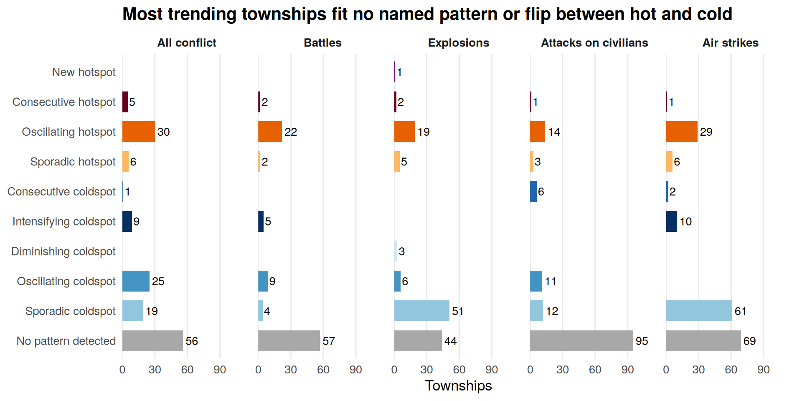
ehsa_bar <- ehsa_tab %>% filter(p_value < 0.05) %>%
mutate(pattern = factor(pattern, levels = rev(ehsa_levels)),
variable = factor(variable, levels = ehsa_vars,
labels = c("All conflict", "Battles", "Explosions", "Attacks on civilians", "Air strikes"))) %>%
count(variable, pattern)
ggplot(ehsa_bar, aes(n, pattern, fill = pattern)) +
geom_col(width = 0.7) +
geom_text(aes(label = n), hjust = -0.2, size = 3.6) +
scale_fill_manual(values = ehsa_cols, guide = "none") +
scale_x_continuous(breaks = c(0, 50, 100), expand = expansion(mult = c(0, 0.25))) +
facet_wrap(~ variable, nrow = 1) +
labs(title = "Most trending townships fit no named pattern or flip between hot and cold",
x = "Townships", y = NULL) +
theme_minimal(base_size = 13) +
theme(plot.title = element_text(face = "bold"), strip.text = element_text(face = "bold"),
panel.grid.major.y = element_blank(), panel.grid.minor = element_blank(),
panel.spacing.x = unit(1.4, "lines"))Most townships changed on and off rather than steadily. Of the 155 townships with a significant trend in all conflict, 56 fit none of the named patterns, mostly because they were not significant in the final quarter, which nearly every named pattern requires. 35 of these were moved from sfdep’s sporadic class by the lecture-rule check in Step 3. The next largest groups are 29 oscillating hot spots and 25 oscillating cold spots, townships that changed from cold to hot or from hot to cold. Only 5 townships became hot and stayed hot, and none is a new, intensifying or persistent hot spot. This is what a war with moving front lines looks like, because Gi* compares each township with the rest of the country in the same quarter, and the rest of the country keeps changing. The other variables are similar, except that sporadic cold spots are a large group for explosions, 47 townships, and for air strikes, 64. These townships were cold now and then and never hot. Across all five variables there is one new hot spot, Hpakant for explosions. The maps below show where each class is.
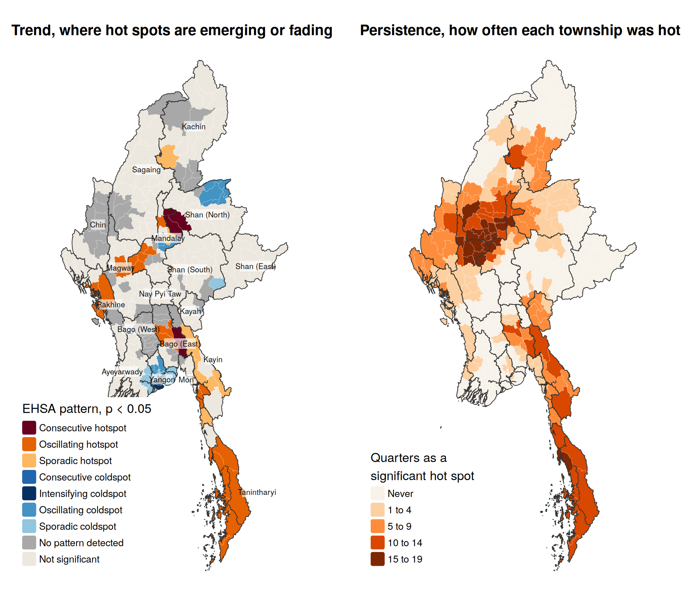
tot_map <- ehsa_map %>% filter(variable == "All armed conflict") %>%
mutate(hot_band = cut(hot_q, c(-1, 0, 4, 9, 14, 19),
labels = c("Never", "1 to 4", "5 to 9", "10 to 14", "15 to 19")))
m1 <- tm_shape(tot_map) +
tm_polygons(fill = "shown", fill.scale = tm_scale_categorical(values = ehsa_cols, levels.drop = TRUE),
fill.legend = tm_legend(title = "EHSA pattern, p < 0.05", position = tm_pos_out("right", "center"),
frame = FALSE),
col = "white", lwd = 0.15) +
state_borders + state_names +
tm_layout(frame = FALSE) +
tm_title("Where hot spots are emerging or fading", size = 1.1, fontface = "bold")
m2 <- tm_shape(tot_map) +
tm_polygons(fill = "hot_band", fill.scale = tm_scale_categorical(values = c("#F7F2EA", "#FDD0A2", "#FD8D3C", "#D94801", "#7F2704")),
fill.legend = tm_legend(title = "Quarters as a\nsignificant hot spot", position = tm_pos_in("left", "bottom"),
frame = FALSE),
col = "white", lwd = 0.15) +
state_borders +
tm_layout(frame = FALSE) +
tm_title("How often each township was hot", size = 1.1, fontface = "bold")
# the trend map keeps its legend outside, so it cannot cover the delta
tmap_arrange(m1, m2, ncol = 2, widths = c(0.6, 0.4))The core stayed hot, and conflict spread around it. 155 of 330 townships have a significant trend, a few more than the 140 in Step 2, because EHSA’s Gi* also uses the previous quarter. The right map explains why the Sagaing core is mostly blank on the left. Its High-High townships were significant hot spots in 10 to 18 of the 19 quarters. Their Gi* rose to a peak in 2023 and then fell, so there is no single direction and no significant trend. The growing hot spots are around the core. 5 consecutive hot spots, which became hot late and stayed hot, are in the hills of Bago East and on the road from Mandalay to northern Shan. 29 oscillating hot spots, cold earlier and hot by the end, are in Tanintharyi, Mon, central Rakhine, Bago East and the south of the Dry Zone. On the cold side, 42 of Yangon’s 45 townships are in a cold pattern. Six townships on the northern Shan border were the hottest in the country in late 2023 and became cold afterwards. Each pattern is described below.
What each pattern looks like over time
Each panel shows the EHSA Gi* series of every township in one pattern in grey, and their median in colour. The shaded bands mark significant values, hot above 1.96 and cold below −1.96.
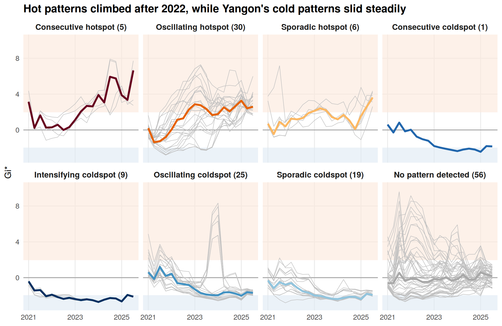
series <- ehsa_all$total$gi %>%
inner_join(sig_tot %>% select(TS_PCODE, pattern), by = "TS_PCODE") %>%
add_count(pattern, time, name = "n_ts") %>%
mutate(panel = paste0(pattern, " (", n_ts, ")"),
panel = fct_reorder(panel, match(pattern, ehsa_levels)))
med <- series %>% group_by(panel, pattern, time) %>% summarise(gi = median(gi_star), .groups = "drop")
ggplot(series, aes(time, gi_star)) +
annotate("rect", xmin = -Inf, xmax = Inf, ymin = 1.96, ymax = Inf, fill = "#FBE7DA", alpha = 0.6) +
annotate("rect", xmin = -Inf, xmax = Inf, ymin = -Inf, ymax = -1.96, fill = "#DDE9F4", alpha = 0.6) +
geom_hline(yintercept = 0, colour = "grey60") +
geom_line(aes(group = TS_PCODE), colour = "grey75", linewidth = 0.3) +
geom_line(data = med, aes(y = gi, colour = pattern), linewidth = 1.3) +
# the map's light grey would vanish among the grey township lines, so the median line is darker
scale_colour_manual(values = replace(ehsa_cols, "No pattern detected", "#5E5E5E"), guide = "none") +
scale_x_continuous(breaks = c(1, 9, 17), labels = c("2021", "2023", "2025")) +
coord_cartesian(ylim = c(-3, 10)) +
facet_wrap(~ panel, ncol = 4) +
labs(title = "Hot patterns climbed after 2022, while Yangon's cold patterns slid steadily",
x = NULL, y = "Gi*") +
theme_minimal(base_size = 13) +
theme(plot.title = element_text(face = "bold"), strip.text = element_text(face = "bold", size = 11.5),
panel.grid.minor = element_blank())Reading each pattern
Consecutive hot spots, 5 townships. These are the clearest new hot spots. Shwegyin, Kyaukkyi, Mogoke, Kyaukme, Nawnghkio were not hot in 2021 but became hot and stayed hot to the end, with Gi* rising from about zero to between 3 and 7. They are on two new fronts. One is the hills of Bago East next to Kayin, around Kyaukkyi and Shwegyin. The other is the road from Mandalay to northern Shan, through Mogoke, Nawnghkio and Kyaukme, where fighting moved in the second phase of Operation 1027 in 2024. Both run from the border areas towards the centre of the country, so this is where the conflict is still moving.
Oscillating hot spots, 29 townships. This is the largest hot pattern. Each township was a significant cold spot at least once, usually in 2021, and is hot in the final quarter. There are four groups. 9 cover most of Tanintharyi, from Dawei to Kawthoung. 4 are in central Rakhine, around Kyaukpyu and Ramree, which were cold in 2021 and turned hot in 2024 as fighting moved south through the state. 3 are in Mon and 4 in Bago East. The rest are in the Dry Zone, mostly in the south around Myingyan, Taungtha, Chauk and Salin, plus Singu on the road to northern Shan. Conflict reached all of these places during the study period.
Sporadic hot spots, 7 townships. These are hot in the final quarter and were hot on and off before, but never cold. 4 are in Kayin, including Kawkareik, Myawaddy and Hpa-An on the Thai border. Their Gi* was highest in 2025, so fighting on the south-east border is increasing again.
Oscillating cold spots, 25 townships. These were hot at least once and are cold now. 6 are on the Chinese border in northern Shan, including Laukkaing, Hseni and Kunlong. They were the hottest places in Myanmar in late 2023, when Operation 1027 began, which is the spike in Figure 13, and became cold after the ceasefire brokered by China in early 2024. The other 19 are in Yangon and around Mandalay city. They were briefly hot during the urban resistance of 2021 and have been cold since.
Intensifying, consecutive and sporadic cold spots, 33 townships. The 11 intensifying cold spots are all in Yangon, including downtown Pazundaung, Botahtaung and Kyauktada, and they grow colder each year. Thingangyun and Hlaing are consecutive cold spots. The sporadic cold spots are mostly in Yangon and the delta. Together they show conflict declining in Myanmar’s largest city.
No pattern detected, 56 townships. These have a significant trend but fit none of the patterns, usually because they were not significant in the final quarter. There are two groups. 27 are falling, led by Chin, Kachin, Mandalay and the north-west of Sagaing, where conflict peaked in 2021 or 2022 and faded. 29 are rising, 13 of them in Bago West, including Okpho from Figure 10. They are warming but are not yet hot spots, so they are the townships to watch.
Step 5. How each type of violence is moving
The same analysis is repeated for each conflict variable in the cube.
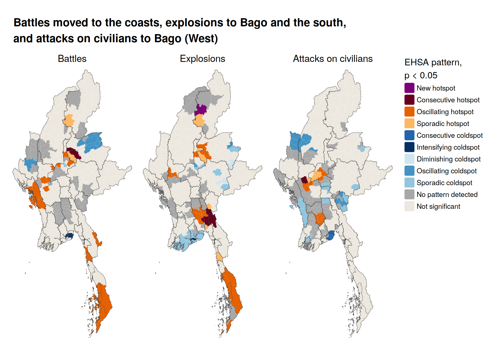
tm_shape(ehsa_map %>% filter(variable %in% ehsa_vars[c("battles", "remote", "civilians")]) %>%
mutate(variable = factor(fct_drop(variable), labels = c("Battles", "Explosions", "Attacks on civilians")))) +
tm_polygons(fill = "shown", fill.scale = tm_scale_categorical(values = ehsa_cols, levels.drop = TRUE),
fill.legend = tm_legend(title = "EHSA pattern,\np < 0.05", position = tm_pos_out("right", "center"),
frame = FALSE),
col = "white", lwd = 0.1) +
tm_facets(by = "variable", ncol = 3) +
tm_shape(mmr_st) + tm_borders(col = "grey25", lwd = 0.5) +
tm_layout(frame = FALSE, panel.label.size = 1.1, panel.label.bg.color = "white", panel.label.frame = FALSE) +
tm_title("Battles moved to the coasts, explosions to Bago and the south,\nand attacks on civilians to Bago West",
size = 1.1, fontface = "bold")Battles, 101 townships with a significant trend. Ground fighting moved to the coast and the far south. 22 townships changed from cold to hot, led by 6 in Tanintharyi and 6 in central Rakhine. 9 northern Shan townships were hot during Operation 1027 and cold after the 2024 ceasefire. Only about half of the battle trends pass the false discovery rate check in Step 7, so this map is less certain than the others.
Explosions and remote violence, 133 townships. Explosions spread into the hills between the Dry Zone and Kayin, and into the south. 17 townships changed from cold to hot, led by 7 in Tanintharyi and 5 in Bago East. Hpakant is a new hot spot. Yangon and the delta became colder as the bombings of 2021 and 2022 stopped.
Violence against civilians, 147 townships. This type shows the clearest move. 7 of its 13 oscillating hot spots are in Bago West, including Letpadan and Okpho, an area with little fighting. The far north-west, around Kale and Tedim, changed from hot to cold. Attacks on civilians are moving south into the lowlands.
Step 6. The military’s air strikes
Figure 3 showed that the military’s air strikes rose about 23-fold. Air strikes can reach any township, so they are mapped on their own.
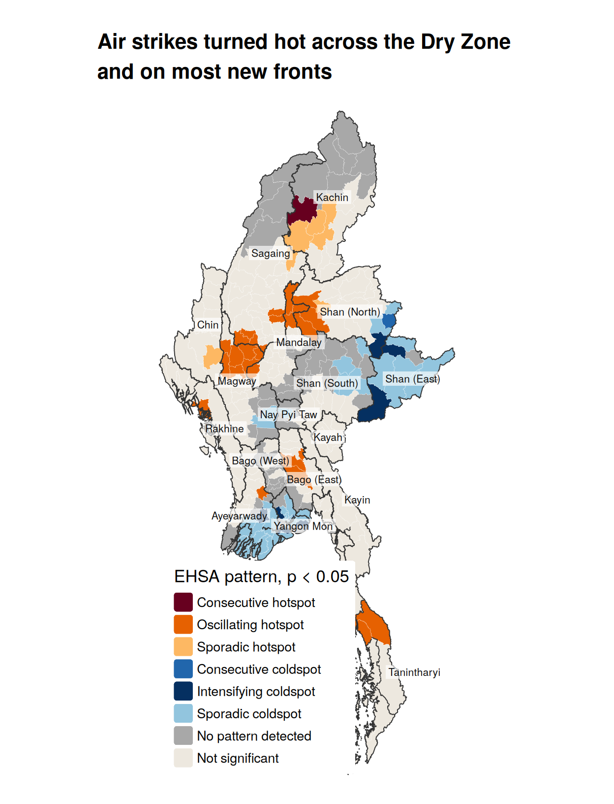
tm_shape(ehsa_map %>% filter(variable == "Military air strikes")) +
tm_polygons(fill = "shown", fill.scale = tm_scale_categorical(values = ehsa_cols, levels.drop = TRUE),
fill.legend = tm_legend(title = "EHSA pattern, p < 0.05", position = tm_pos_out("right", "center"),
frame = FALSE),
col = "white", lwd = 0.15) +
state_borders + state_names +
tm_layout(frame = FALSE) +
tm_title("Air strikes turned hot across the Dry Zone\nand on most new fronts", size = 1.1, fontface = "bold")Air strikes grew most in the Dry Zone and on most of the new ground fronts. 176 townships have a significant trend in military air strikes. 29 are oscillating hot spots, cold in 2021 when strikes were rare and hot by the end. They cover 6 townships in the Sagaing core, 7 in Magway, the road to northern Shan, the hills of Bago East and Dawei in Tanintharyi, many of the same places as the new ground fronts in Figure 12. Central Rakhine is the exception, with only Myebon. In the Sagaing core, ground events fell after 2023 but air strikes kept rising. Hpakant in Kachin is a consecutive hot spot, and nearby Myitkyina, Mohnyin and Mogaung are sporadic ones. Most cold patterns, in Yangon, the delta and Shan East, mean these places were rarely bombed while strikes rose elsewhere. For civilians, the danger from the air grew most where ground fighting was also growing.
Step 7. How much to trust the trends
The Lesson 5 notes warn that the Mann-Kendall test assumes no serial correlation, meaning each quarter’s value should not depend on the one before. Conflict data break this rule, because a busy quarter is usually followed by another busy one. The table measures how strong this is and tests every trend again in two ways. The modified Mann-Kendall test by Hamed and Rao, 1998, mmkh() from modifiedmk, widens the test to allow for serial correlation. The false discovery rate correction allows for running 330 tests at once.
serial correlation, corrected trend test and FDR
trend_check <- map_dfr(names(ehsa_vars), function(v) {
g <- ehsa_all[[v]]$gi %>% arrange(TS_PCODE, time) %>% group_by(TS_PCODE) %>%
summarise(ac1 = acf(gi_star, lag.max = 1, plot = FALSE)$acf[2],
p_hr = mmkh(gi_star)[["new P-value"]])
e <- ehsa_all[[v]]$ehsa
both <- e %>% select(TS_PCODE = location, p_value) %>% left_join(g, by = "TS_PCODE")
tibble(variable = ehsa_vars[[v]],
median_lag1 = round(median(g$ac1, na.rm = TRUE), 2),
significant = sum(both$p_value < 0.05),
after_fdr = sum(p.adjust(both$p_value, "fdr") < 0.05),
modified_mk = sum(both$p_value < 0.05 & both$p_hr < 0.05, na.rm = TRUE))
})
trend_check %>% kable(col.names = c("Variable", "Median lag-1 autocorrelation", "Significant at p < 0.05",
"Still significant after FDR", "Still significant under modified Mann-Kendall"))| Variable | Median lag-1 autocorrelation | Significant at p < 0.05 | Still significant after FDR | Still significant under modified Mann-Kendall |
|---|---|---|---|---|
| All armed conflict | 0.65 | 155 | 124 | 120 |
| Battles | 0.64 | 101 | 54 | 64 |
| Explosions and remote violence | 0.58 | 133 | 115 | 121 |
| Violence against civilians | 0.61 | 147 | 102 | 121 |
| Military air strikes | 0.60 | 176 | 169 | 174 |
Most trends pass both checks, but battle trends are weak. The median lag-1 autocorrelation is around 0.6 for every variable, so the plain Mann-Kendall p-values are too small, as the lecture warns. Even so, most significant trends pass both checks. For all armed conflict, 124 of 155 remain after FDR and 120 under the modified test. Explosions and military air strikes do even better. Battles are the exception, with only 54 of 101 passing FDR, so the battle map in Figure 14 is a rough guide only. The maps keep the brief’s p < 0.05 rule, and these numbers show how much each map can be trusted.
Bonus 1. The Kind of Violence, Multivariate Local Geary’s c
Why this question, and why this method
The first objective asks where violence clusters or “behaves unusually compared to surrounding townships”. Task 2 answered this for the amount of violence, one type at a time. But two townships with the same total can face very different violence. A township with ground battles needs front-line medical care and safe routes out. A city township with bombings and killings needs protection and monitoring. Task 2 cannot show this difference, because it never looks at the three types together.
The Lesson 5 notes list local Geary’s c under “Other forms of LISA”. Its multivariate form, by Anselin, 2019, compares a township’s values on several variables with its neighbours’ values. A small value means the township and its neighbours have the same mix, a cluster in the kind of violence. A large value means the township’s mix is unlike its neighbours’, an outlier. This extends the first objective from how much violence there is to what kind.
- Question
- Do neighbouring townships face the same mix of battles, explosions and attacks on civilians, and where does the mix cluster or stand out?
- Method
-
Multivariate local Geary’s c,
local_c_perm()from sfdep, on the three conflict variables. - Null model
- Conditional permutation of whole township profiles, 999 shuffles. A significant low value of c means the township and its neighbours are more alike than chance, a cluster. A significant high value means they are less alike, an outlier.
- Assumptions
- The three types are put on one scale first. Counts are log-transformed, taking the log of one plus the count to reduce the skew, then standardised. Each type has the same weight.
- Settings
- 8 nearest neighbours, row-standardised weights, p < 0.05, checked with FDR and with 6 and 10 neighbours.
Step 1. Computing the statistic
multivariate local Geary's c
z_log <- function(x) as.numeric(scale(log1p(x)))
geary_in <- wm_knn %>%
mutate(z_battles = z_log(battles), z_remote = z_log(remote), z_civilians = z_log(civilians))
profile_of <- function(p, cl, zb, zr, zc) case_when(
p >= 0.05 ~ "Not significant",
cl == "Negative" ~ "Mix unlike its neighbours",
zb > 0 & zr > 0 & zc > 0 ~ "All three high",
zb < 0 & zr < 0 & zc < 0 ~ "All three low",
zb < 0 ~ "Few battles, more bombs or attacks on civilians",
TRUE ~ "Mostly battles")
profile_levels <- c("All three high", "Mostly battles", "Few battles, more bombs or attacks on civilians",
"All three low", "Mix unlike its neighbours", "Not significant")
set.seed(1234)
geary <- geary_in %>%
mutate(local_c = local_c_perm(list(z_battles, z_remote, z_civilians), nb, wt, nsim = 999), .before = 1) %>%
unnest(local_c) %>%
mutate(profile = factor(profile_of(p_ci_sim, cluster, z_battles, z_remote, z_civilians), levels = profile_levels))Step 2. Naming the groups from the data
local_c_perm() only says whether a township is like or unlike its neighbours. To describe what the shared mix is, each significant township is grouped by which of its three standardised values are above the national average. The table checks that the group names fit the data. It gives each group’s average standardised values and its share of each type, next to the national shares.
what each group's mix really is
nat <- colSums(st_drop_geometry(mmr_conflict)[, c("battles", "remote", "civilians")]) / sum(mmr_conflict$total)
f1 <- function(x) sprintf("%.1f", ifelse(abs(x) < 0.05, 0, x)) # avoids printing -0.0
shares <- function(b, r, c) paste(round(100 * b), round(100 * r), round(100 * c), sep = " / ")
geary %>% st_drop_geometry() %>%
group_by(profile) %>%
summarise(townships = n(),
z_mix = paste(f1(mean(z_battles)), f1(mean(z_remote)), f1(mean(z_civilians)), sep = " / "),
share = shares(sum(battles) / sum(total), sum(remote) / sum(total), sum(civilians) / sum(total))) %>%
add_row(profile = "Myanmar as a whole", share = shares(nat[["battles"]], nat[["remote"]], nat[["civilians"]])) %>%
kable(col.names = c("Group", "Townships", "Average z, battles / explosions / civilians",
"Share of events %, battles / explosions / civilians"),
align = c("l", "r", "c", "c"))| Group | Townships | Average z, battles / explosions / civilians | Share of events %, battles / explosions / civilians |
|---|---|---|---|
| All three high | 71 | 1.0 / 1.0 / 0.9 | 40 / 42 / 18 |
| Mostly battles | 11 | 0.6 / 0.2 / 0.0 | 50 / 35 / 15 |
| Few battles, more bombs or attacks on civilians | 34 | -0.6 / 0.2 / 0.4 | 10 / 55 / 36 |
| All three low | 77 | -1.2 / -1.1 / -1.0 | 18 / 46 / 36 |
| Mix unlike its neighbours | 2 | 0.4 / 0.0 / -1.1 | 63 / 29 / 8 |
| Not significant | 135 | 0.2 / 0.0 / 0.0 | 42 / 41 / 16 |
| Myanmar as a whole | 39 / 42 / 18 |
The battle shares support the names. In the group called “few battles, more bombs or attacks on civilians”, battles are only 10% of events, against 39% nationally. Its share of attacks on civilians, 36%, is high, but the all-low group has a similar share. The difference is the combination. This group has few battles but above-average numbers of bombs or attacks on civilians, while the all-low townships have few events of any type.
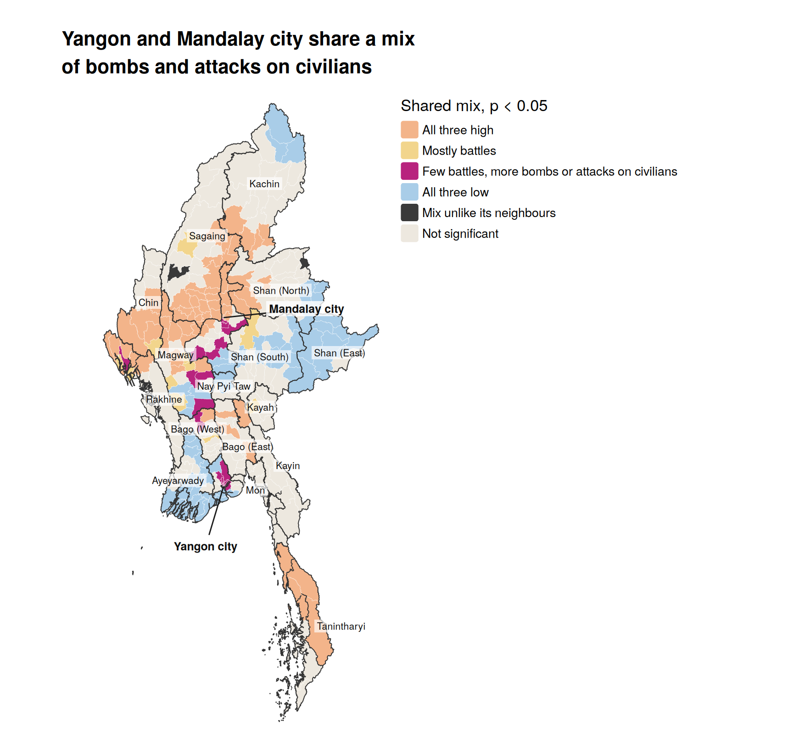
# the group this map is about gets the one strong colour, and the expected groups get soft ones (Lesson 2, colour guide 5)
geary_cols <- c("All three high" = "#F3B48A", "Mostly battles" = "#F2D58C",
"Few battles, more bombs or attacks on civilians" = "#B8237E", "All three low" = "#A9CDE8",
"Mix unlike its neighbours" = "#3A3A3A", "Not significant" = col_ns)
# call-outs that point to the two cities the title names
city_xy <- function(ts) mmr_ts %>% filter(TS %in% ts) %>% summarise() %>% st_centroid() %>% st_coordinates()
cities <- tibble(name = c("Yangon city", "Mandalay city"),
xy = list(city_xy(c("Kyauktada", "Pabedan", "Botahtaung", "Lanmadaw", "Latha")),
city_xy(c("Chanayethazan", "Mahaaungmyay", "Aungmyaythazan", "Chanmyathazi"))),
dx = c(-60, 280) * 1000, dy = c(-200, 30) * 1000)
city_lab <- cities %>% mutate(x = map_dbl(xy, 1) + dx, y = map_dbl(xy, 2) + dy) %>% select(name, x, y) %>%
st_as_sf(coords = c("x", "y"), crs = st_crs(mmr_ts))
city_line <- st_sf(name = cities$name, crs = st_crs(mmr_ts),
geometry = st_sfc(map(seq_len(nrow(cities)), function(i)
st_linestring(rbind(cities$xy[[i]], cities$xy[[i]] + 0.8 * c(cities$dx[i], cities$dy[i]))))))
callouts <- tm_shape(city_line) + tm_lines(col = "grey10", lwd = 1.2) +
tm_shape(city_lab) + tm_text("name", size = 0.65, fontface = "bold", col = "grey5", bgcol = "white", bgcol_alpha = 0.8)
tm_shape(geary) +
tm_polygons(fill = "profile",
fill.scale = tm_scale_categorical(values = geary_cols, levels.drop = TRUE),
fill.legend = tm_legend(title = "Shared mix, p < 0.05", position = tm_pos_out("right", "center"),
frame = FALSE),
col = "white", lwd = 0.2) +
state_borders + callouts +
# the Yangon and Mandalay state names are left off so they do not cover the townships this map is about
tm_shape(filter(st_lab, !ST %in% c("Yangon", "Mandalay"))) +
tm_text("ST", size = 0.55, col = "grey5", bgcol = "white", bgcol_alpha = 0.65) +
tm_layout(frame = FALSE) +
tm_title("Yangon and Mandalay city share a mix\nof bombs and attacks on civilians",
size = 1.1, fontface = "bold")Two large groups match Task 2, and a third is new. 193 townships share their mix with their neighbours more than chance would give. 71 have all three types high, led by 22 in Sagaing, then Magway and Mandalay, with Rakhine and Tanintharyi. 77 have all three low, in the delta, downtown Yangon and eastern and southern Shan. The third group, in magenta, is the new finding. 34 townships, 20 in Yangon and 8 in Mandalay, mostly in and around the two cities, have few battles but above-average bombs or attacks on civilians. Insein in Yangon, for example, had 5 battles but 93 explosions and 56 attacks on civilians. This looks like urban bombings and targeted killings rather than front-line fighting. Only 2 townships have a mix unlike their neighbours’. Kalewa in Sagaing recorded no attacks on civilians, unlike the townships around it, and Laukkaing on the Chinese border had mostly battles, unlike its neighbours.
Step 3. What this adds to Task 2
Geary groups against the local Moran's I classes
geary %>% st_drop_geometry() %>%
mutate(lisa = factor(as.character(lisa$quadrant), levels = c("High-High", "Low-Low", "Low-High", "Not significant"))) %>%
filter(profile != "Not significant") %>%
mutate(profile = fct_drop(profile)) %>%
count(profile, lisa, .drop = FALSE) %>%
pivot_wider(names_from = lisa, values_from = n, values_fill = 0) %>%
kable(col.names = c("Geary group", "LISA High-High", "LISA Low-Low", "LISA Low-High", "LISA not significant"))| Geary group | LISA High-High | LISA Low-Low | LISA Low-High | LISA not significant |
|---|---|---|---|---|
| All three high | 34 | 0 | 0 | 37 |
| Mostly battles | 0 | 0 | 0 | 11 |
| Few battles, more bombs or attacks on civilians | 0 | 4 | 0 | 30 |
| All three low | 0 | 61 | 0 | 16 |
| Mix unlike its neighbours | 0 | 0 | 1 | 1 |
Maps of total counts do not show the urban group. Of the 34 bombs-and-civilians townships, 30 are not significant in local Moran’s I and 4 are Low-Low. By their totals they are quiet. By their mix, they share a kind of violence that calls for protecting civilians in cities rather than front-line aid. Geary’s c also finds a larger hot core, 71 all-high townships against 35 High-High in local Moran’s I, because it asks whether neighbours share the mix, not whether totals are extreme.
Step 4. Is the mix changing?
The second objective asks in what pattern violence is changing. The same test is run for two periods, January 2021 to December 2022 and January 2023 to September 2025, to see whether the groups changed.
Geary's c for the early and late periods
period_geary <- function(qs, label) {
counts <- cube_counts %>% filter(quarter %in% qs) %>% group_by(TS_PCODE) %>%
summarise(across(c(battles, remote, civilians), sum))
d <- wm_knn %>% select(TS_PCODE, TS, ST, nb, wt) %>% left_join(counts, by = "TS_PCODE")
zb <- z_log(d$battles); zr <- z_log(d$remote); zc <- z_log(d$civilians)
set.seed(1234)
g <- local_c_perm(list(zb, zr, zc), d$nb, d$wt, nsim = 999)
d %>% mutate(period = label,
profile = factor(profile_of(g$p_ci_sim, g$cluster, zb, zr, zc), levels = profile_levels))
}
geary_time <- bind_rows(period_geary(quarters[1:8], "2021 to 2022"),
period_geary(quarters[9:19], "2023 to 2025"))
geary_time %>% st_drop_geometry() %>%
filter(profile == "Few battles, more bombs or attacks on civilians") %>%
count(period, ST) %>% pivot_wider(names_from = period, values_from = n, values_fill = 0) %>%
kable(col.names = c("State or region", "2021 to 2022", "2023 to 2025"))| State or region | 2021 to 2022 | 2023 to 2025 |
|---|---|---|
| Ayeyarwady | 3 | 3 |
| Magway | 2 | 5 |
| Mandalay | 3 | 8 |
| Nay Pyi Taw | 1 | 0 |
| Shan South | 3 | 0 |
| Yangon | 21 | 15 |
| Bago West | 0 | 1 |
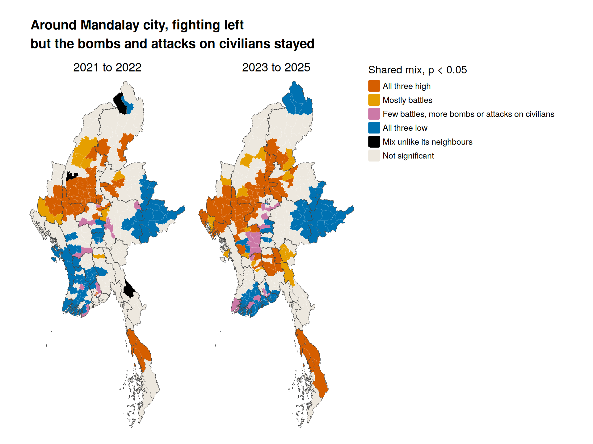
tm_shape(geary_time) +
tm_polygons(fill = "profile",
fill.scale = tm_scale_categorical(values = geary_cols, levels.drop = TRUE),
fill.legend = tm_legend(title = "Shared mix, p < 0.05", position = tm_pos_out("right", "center"),
frame = FALSE),
col = "white", lwd = 0.1) +
tm_facets(by = "period", ncol = 2) +
tm_shape(mmr_st) + tm_borders(col = "grey25", lwd = 0.5) + callouts +
tm_layout(frame = FALSE, panel.label.size = 1.1, panel.label.bg.color = "white", panel.label.frame = FALSE) +
tm_title("Around Mandalay city, fighting left\nbut the bombs and attacks on civilians stayed",
size = 1.1, fontface = "bold")Around Mandalay the group grew, and in Yangon it moved to the outskirts. In Mandalay the group grew from 3 to 8 townships, and in Magway from 2 to 5. 9 townships had all three types high in 2021 and 2022 and moved into this group by 2023 to 2025. 6 are in Mandalay region, Chanayethazan, Mahaaungmyay, Chanmyathazi, Pyigyitagon, Kyaukse, Wundwin, and 3 on the edge of Yangon, Mingaladon and Dagon Myothit South and Dagon Myothit North. Battles stopped there, but bombings and attacks on civilians did not. Yangon’s group went from 21 to 15 townships, and only 9 were in it both times. It moved from downtown townships, such as Botahtaung and Lanmadaw, to the industrial outskirts, such as Hlaingtharya and Mingaladon. This matches the outward spread found in Task 3.
Step 5. How much to trust the groups
FDR and different numbers of neighbours
urban_ids <- geary$TS_PCODE[geary$profile == "Few battles, more bombs or attacks on civilians"]
k_check <- map_dfr(c(6, 8, 10), function(k) {
nb_k <- st_knn(centres, k = k); wt_k <- st_weights(nb_k, style = "W")
set.seed(1234)
g <- local_c_perm(list(geary$z_battles, geary$z_remote, geary$z_civilians), nb_k, wt_k, nsim = 999)
prof <- profile_of(g$p_ci_sim, g$cluster, geary$z_battles, geary$z_remote, geary$z_civilians)
tibble(neighbours = k, significant = sum(g$p_ci_sim < 0.05),
urban_kept = sum(prof[geary$TS_PCODE %in% urban_ids] == "Few battles, more bombs or attacks on civilians"))
})
k_check %>% kable(col.names = c("Neighbours", "Significant townships", paste("Bombs-and-civilians townships kept, of", length(urban_ids))))| Neighbours | Significant townships | Bombs-and-civilians townships kept, of 34 |
|---|---|---|
| 6 | 178 | 30 |
| 8 | 195 | 34 |
| 10 | 208 | 32 |
tibble(group = c("All significant townships", "Bombs-and-civilians group"),
significant = c(sum(geary$p_ci_sim < 0.05), length(urban_ids)),
after_fdr = c(sum(p.adjust(geary$p_ci_sim, "fdr") < 0.05),
sum(p.adjust(geary$p_ci_sim, "fdr")[geary$TS_PCODE %in% urban_ids] < 0.05))) %>%
kable(col.names = c("Group", "Significant at p < 0.05", "Still significant after FDR"))| Group | Significant at p < 0.05 | Still significant after FDR |
|---|---|---|
| All significant townships | 195 | 166 |
| Bombs-and-civilians group | 34 | 27 |
The urban group is stable. Almost all of its townships stay in it with 6 or 10 neighbours, and most pass the FDR correction.
Assumptions and limitations of the bonus
| Assumption or limit | Effect | How it was handled |
|---|---|---|
| The three types are logged and standardised, and weigh the same | A different weighting, for example by fatalities, could change the groups | Stated. The group shares in Step 2 show the names follow the raw counts |
| Groups use the sign of each standardised value | A township just above the national average counts as high | Group averages in Step 2 are well away from zero |
| Small townships in Yangon have low counts | The urban group rests on tens of events per township | Checked with FDR and with 6 and 10 neighbours |
| Geary’s c is a similarity measure | It cannot say why neighbours share a mix | Read together with Task 2 and Task 3, not alone |
Bonus 2. Conflict Regions, Spatially Constrained Clustering
Why this question, and why this method
The second objective asks in what pattern violence changes. Task 3 answered this one township at a time, giving each a label from its own Gi* series, such as oscillating hot spot. Two townships can have the same label but different histories. One may have been hot in 2021 and again in 2025, the other only in 2023. EHSA cannot separate them, because the Mann-Kendall test looks at direction, not timing. Aid agencies and ceasefire monitors also plan by area, not by single township, so they need to know which neighbouring townships had their conflict at the same time.
Lesson 6 and chapter 12 of the course text cover geographic segmentation with spatially constrained clustering, Kam, 2026c and 2026d. SKATER, by Assunção et al., 2006, and run with skater() from spdep, joins neighbouring townships into regions so that the townships in each region are as alike as possible. Here the input is each township’s timeline, the 19 quarterly Gi* values used by EHSA in Task 3. So a region is a block of touching townships whose conflict rose and fell together.
- Question
- Which neighbouring townships went through the same timeline of conflict, and how do the resulting regions differ?
- Method
-
SKATER spatially constrained clustering,
nbcosts(),mstree()andskater()from spdep, following chapter 12 of the course text. - Input
- The 19 quarterly Gi* values of total events for each township, the same values EHSA used in Task 3 Step 3. Gi* is already on the same scale in every quarter, so no further standardisation is needed.
- Assumptions
- Regions must be contiguous, so a township can only join a region it touches. Euclidean distance between timelines gives every quarter the same weight.
- Settings
- Queen contiguity, as in the course text, with each island linked to its nearest township as in Task 2 Step 6. Queen contiguity is used here instead of nearest neighbours because regions should be blocks of townships that share borders. The number of regions is chosen from the share of variation explained, below.
Step 1. Building the regions
SKATER has three steps, as in the course text. nbcosts() gives every pair of neighbouring townships a cost, the distance between their timelines. mstree() keeps only the cheapest links that still connect every township, a minimum spanning tree. skater() then cuts the tree into regions, choosing each cut so that townships within a region are as similar as possible.
timelines, costs and the minimum spanning tree
gi_wide <- ehsa_all$total$gi %>%
select(TS_PCODE, time, gi_star) %>%
pivot_wider(names_from = time, values_from = gi_star, names_prefix = "q")
gi_wide <- mmr_conflict %>% st_drop_geometry() %>% select(TS_PCODE) %>%
left_join(gi_wide, by = "TS_PCODE") # same row order as the neighbour list
stopifnot(identical(gi_wide$TS_PCODE, mmr_conflict$TS_PCODE))
timeline <- as.matrix(select(gi_wide, -TS_PCODE))
costs <- nbcosts(nb_queen_fix, timeline)
w_cost <- nb2listw(nb_queen_fix, costs, style = "B")
mst <- mstree(w_cost)There is no single correct number of regions, so the data are used to choose. For each number of regions, the table gives the share of variation in the timelines that the regions explain. It also gives the same share for ordinary Ward clustering, hclust(), which ignores location. The gap between the two is the cost of requiring regions to be contiguous.
how many regions?
within_ss <- function(groups) sum(sapply(split(seq_len(nrow(timeline)), groups),
function(i) sum(scale(timeline[i, , drop = FALSE], scale = FALSE)^2)))
total_ss <- sum(scale(timeline, scale = FALSE)^2)
ward <- hclust(dist(timeline), method = "ward.D2")
k_tab <- map_dfr(3:12, function(k) {
sk <- skater(mst[, 1:2], timeline, ncuts = k - 1)
tibble(regions = k,
skater = 1 - within_ss(sk$groups) / total_ss,
ward = 1 - within_ss(cutree(ward, k)) / total_ss,
smallest = min(table(sk$groups)))
}) %>% mutate(gain = skater - lag(skater))
k_tab %>%
mutate(across(c(skater, ward, gain), ~ scales::percent(.x, 0.1))) %>%
kable(col.names = c("Regions", "Explained, SKATER", "Explained, Ward without location",
"Smallest region", "Gain from one more region"), na = "")| Regions | Explained, SKATER | Explained, Ward without location | Smallest region | Gain from one more region |
|---|---|---|---|---|
| 3 | 45.9% | 64.6% | 27 | |
| 4 | 52.3% | 70.4% | 27 | 6.4% |
| 5 | 55.9% | 74.2% | 27 | 3.6% |
| 6 | 61.5% | 77.1% | 26 | 5.5% |
| 7 | 65.4% | 79.6% | 16 | 3.9% |
| 8 | 69.6% | 81.9% | 10 | 4.2% |
| 9 | 70.7% | 83.6% | 10 | 1.1% |
| 10 | 73.2% | 85.1% | 10 | 2.5% |
| 11 | 76.1% | 86.6% | 9 | 2.9% |
| 12 | 78.3% | 87.7% | 7 | 2.2% |
Up to 8 regions, each extra region explains another 4% to 6% of the variation. A ninth adds only 1.1%, a clear drop, so 8 regions are used. They explain 70% of the variation, against 82% for Ward clustering without location. Contiguity lowers the fit a little, as expected, but gives regions that can be used as planning areas.
cut the tree into regions and name them
sk <- skater(mst[, 1:2], timeline, ncuts = n_regions - 1)
# each region is named after the township that anchors it, so the names do not depend on the group numbers
region_names <- c("Monywa" = "Sagaing core", "Maungdaw" = "Rakhine and western Dry Zone",
"Loikaw" = "Kayah", "Kawkareik" = "South-east frontier",
"Nawnghkio" = "Mandalay to northern Shan road", "Hpakant" = "Northern borderlands",
"Kyaukpyu" = "Central belt", "Pathein" = "Yangon and the delta")
anchor <- tibble(TS = names(region_names), name = region_names) %>%
left_join(tibble(TS = mmr_conflict$TS, group = sk$groups), by = "TS")
stopifnot(n_distinct(anchor$group) == n_regions)
regions <- mmr_conflict %>%
mutate(group = sk$groups) %>%
left_join(select(anchor, group, region = name), by = "group") %>%
mutate(region = factor(region, levels = region_names))Step 2. Where the regions are, and what their timelines look like
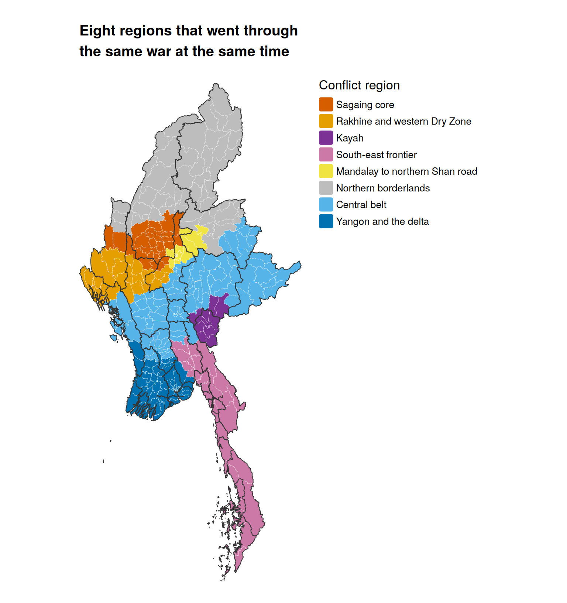
tm_shape(regions) +
tm_polygons(fill = "region",
fill.scale = tm_scale_categorical(values = region_cols),
fill.legend = tm_legend(title = "Conflict region", position = tm_pos_out("right", "center"),
frame = FALSE),
col = "white", lwd = 0.2) +
state_borders +
tm_layout(frame = FALSE) +
tm_title("Eight regions that went through\nthe same war at the same time", size = 1.1, fontface = "bold")The regions run from a hot centre to a cold south. The Sagaing core is in the middle, with Rakhine and the western Dry Zone to its south-west and the road from Mandalay to northern Shan to its east. Kayah is on the eastern border, and the South-east frontier runs from the Bago East hills through Kayin and Mon to Tanintharyi. The Northern borderlands cover Kachin, northern Sagaing and the northern Shan border. A large Central belt from Rakhine to southern Shan, and Yangon and the delta, make up the cold south. Each region is one connected block, so each can be used as a planning area.
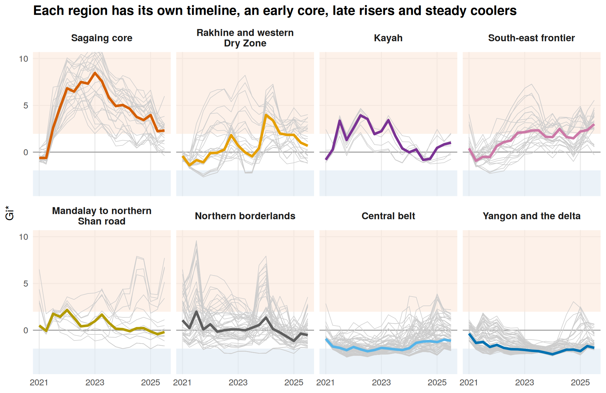
reg_long <- ehsa_all$total$gi %>% select(TS_PCODE, time, gi_star) %>%
left_join(st_drop_geometry(regions) %>% select(TS_PCODE, region), by = "TS_PCODE")
reg_med <- reg_long %>% group_by(region, time) %>% summarise(gi_star = median(gi_star), .groups = "drop")
ggplot(reg_long, aes(time, gi_star)) +
annotate("rect", xmin = -Inf, xmax = Inf, ymin = 1.96, ymax = Inf, fill = "#FBE7DA", alpha = 0.6) +
annotate("rect", xmin = -Inf, xmax = Inf, ymin = -Inf, ymax = -1.96, fill = "#DDE9F4", alpha = 0.6) +
geom_hline(yintercept = 0, colour = "grey60") +
geom_line(aes(group = TS_PCODE), colour = "grey80", linewidth = 0.3) +
geom_line(data = reg_med, aes(colour = region), linewidth = 1.4) +
# darker line colours where the map fill would be too pale on a white panel
scale_colour_manual(values = replace(region_cols, c("Mandalay to northern Shan road", "Northern borderlands"),
c("#B39B00", "#5E5E5E")), guide = "none") +
scale_x_continuous(breaks = c(1, 9, 17), labels = c("2021", "2023", "2025")) +
coord_cartesian(ylim = c(-4, 10)) +
facet_wrap(~ region, ncol = 4, labeller = label_wrap_gen(width = 22)) +
labs(title = "Each region has its own timeline, an early core, late risers and steady coolers",
x = NULL, y = "Gi*") +
theme_minimal(base_size = 13) +
theme(plot.title = element_text(face = "bold"), strip.text = element_text(face = "bold", size = 11.5),
panel.grid.minor = element_blank())Each region has a different timeline. The Sagaing core was a hot spot by the third quarter of 2021, peaked in Q1 2023 at a median Gi* of 8.5, and has fallen since but is still hot. Because it rose and then fell, most of it has no significant trend in EHSA. Kayah was hot from late 2021 to mid-2023 and cooled to about zero from the end of 2023. The Mandalay to northern Shan road was warm in 2021 and 2022 and mostly neutral since. Rakhine and the western Dry Zone stayed near zero until the end of 2023, then jumped to 4 in the first quarter of 2024, when the Arakan Army’s offensive spread. The South-east frontier rose slowly from 2022 and was at 3 in the last quarter, its highest. The Central belt was cold until 2024 and has warmed only a little. Yangon and the delta cooled steadily. The Northern borderlands stayed near zero, but this flat median hides busy townships such as Hpakant.
What the regions add to Task 3
The regions add two things to Task 3. First, they show when. The Sagaing core, Kayah, and Rakhine and the western Dry Zone all contain oscillating or no-pattern townships in EHSA, but their worst years differ, 2023, 2022 and 2024. Second, they agree with EHSA where expected. 47 of the 58 cold-trending townships are in Yangon and the delta, and 30 of the 41 hot-trending townships are in the South-east frontier and in Rakhine and the western Dry Zone.
| Region | Townships | Events | Hot trend in EHSA | Cold trend in EHSA |
|---|---|---|---|---|
| Sagaing core | 27 | 12,870 | 2 | 0 |
| Rakhine and western Dry Zone | 26 | 6,014 | 7 | 0 |
| Kayah | 10 | 2,138 | 0 | 0 |
| South-east frontier | 34 | 10,095 | 23 | 0 |
| Mandalay to northern Shan road | 16 | 4,216 | 4 | 3 |
| Northern borderlands | 52 | 9,363 | 1 | 6 |
| Central belt | 87 | 5,272 | 4 | 2 |
| Yangon and the delta | 78 | 4,032 | 0 | 47 |
Assumptions and limitations of the regions
| Assumption or limit | Effect | How it was handled |
|---|---|---|
| Regions must be contiguous | A township that behaves like a distant area is kept with its neighbours | Compared with Ward clustering without geography in Step 1 |
| The number of regions is a choice | More regions would split the larger ones, such as the Central belt | Chosen where the gain from one more region levels off |
| Gi* is relative to each quarter | A falling timeline means a smaller share of the conflict, not peace | Read together with the counts in Task 1 |
| Every quarter counts equally | A short spike, such as Operation 1027, weighs as much as a long trend | Shown in the timelines, so the reader can see the shape |
| The Northern borderlands median is flat | It hides busy townships such as Hpakant | Those townships are read from Task 2 and Task 3 |
Integrated Findings and Discussion
Each method answers a different question. The findings that several methods agree on are the most reliable.
| Finding | Task 1, maps | Task 2, clusters | Task 3, trends | Bonuses, mix and regions | How sure |
|---|---|---|---|---|---|
| The Dry Zone is the core of the war | 43% of events, 6 of the 10 busiest townships | 28 of 35 High-High, 31 of 40 hot spots | Hot in 10 to 18 of 19 quarters, with no steady trend | 42 of 71 all-high townships. The Sagaing core region was hot from late 2021 and peaked in early 2023 | Very sure, every method agrees |
| Conflict spread outward from the core | Rakhine and Bago grew year after year | Second clusters differ by type | 5 consecutive and 29 oscillating hot spots ring the core | Rakhine and Bago East join the all-high group in 2023 to 2025. The South-east frontier region and Rakhine and the western Dry Zone rose later | Sure for all conflict, weaker for battles alone |
| Fighting left Yangon, but other violence stayed | Events fell sharply after 2022 | 23 Low-Low, 23 cold spots | 42 of 45 townships in a cold pattern | 20 townships share a bombs-and-civilians mix. The Yangon and delta region cooled in every quarter | Sure |
| Northern Shan flared and cooled | Peak in late 2023 | Not a cluster over the whole period | 6 border townships turned from hot to cold | Part of the Northern borderlands region, whose median stayed near zero | Sure, the spike is very large |
| Air strikes follow the ground war | Military air strikes rose about 23-fold | Not tested on air strikes alone. All explosions cluster in the core and on the Bago and Kayin edge | 29 oscillating air hot spots, in the core and on the new fronts | Not tested | Sure, these trends survive every check |
Reading the methods together gives three main points.
- Where conflict is, where it clusters and where it is growing are three different questions. Kawkareik is the second busiest township but is in no cluster. The Sagaing core is the hottest neighbourhood but is blank on the trend map, because it was hot in almost every quarter and rose to a peak in 2023 before falling, so it has no single direction. Using only one of these maps would miss part of the picture.
- The conflict spread out from the core instead of moving away from it. The core stayed hot while new hot spots appeared around it, in the hills of Bago East, on the road to northern Shan, in central Rakhine and in the far south. Townships in Bago West are warming but are not yet hot spots, so they are the most likely next ones. The conflict regions show the order. The Sagaing core was hot first, in 2021. Kayah was hottest in 2022 and 2023, Rakhine and the western Dry Zone jumped at the start of 2024, and the south-east frontier was still rising in 2025.
- When fighting leaves, other violence often stays. Around Mandalay, battles moved away after 2022 but bombs and attacks on civilians continued. Yangon has had this mix throughout, though it moved from downtown to the outskirts. Maps of total counts show these places as quiet, but the mix of violence shows they are not.
Geovisualisation and Geocommunication
The figures follow the colour and design guides in the ISSS608 Lesson 2 notes, Designing Graphs to Enlighten, Kam, 2026a, which draw on Few, 2012. The table lists each choice and the guide behind it.
| Design choice | Guide it follows |
|---|---|
| Every title states the finding, and the short reading below each figure starts with it | A chart needs a well-worded title that tells the reader what to see |
| Warm colours mean high or hot, blue means low or cold, and pale beige means not significant | Use different colours only for differences in meaning, and keep non-data parts just visible enough |
| Outliers use a lighter shade of their side, pale vermilion for High-Low and pale blue for Low-High | The same meaning keeps the same hue, and the strength of the colour shows the strength of the result |
| Counts use one orange scale from pale to dark, with fixed breaks | For a range of values, use one hue and go from pale for low to dark for high |
| Where one group carries the story, it gets the only strong colour and the rest are soft, as in the air strike bars and the Geary map | Use soft colours for most data and a bright one for what needs attention |
| No figure puts red and green together, and the type colours come from the Okabe-Ito colour-blind safe set | Avoid red with green so colour-blind readers can tell groups apart |
| Lines and bars are labelled directly where there is room, instead of with a legend | Direct labels remove the need to look back and forth at a legend |
| Every map has a white background with grey state borders | A plain, even background keeps the same colour looking the same everywhere |
| The EHSA trend map is shown next to a map of how often each township was hot | The brief’s p < 0.05 trend filter hides steady hot spots, and the second map shows them |
Peace-keeping Implications
The brief hopes the results can help peace-building and prevent further conflict. The table links each finding to an action that peace-keepers, ceasefire monitors or aid agencies could consider, and to what they should check first. ACLED records reported events, not need or harm, and the analysis shows where and when, not why or who is responsible. Each row is a starting point for planning, not a conclusion.
| Finding | Possible action | Check first |
|---|---|---|
| The Dry Zone core has been a hot spot in most quarters for almost five years | Plan long-term health, protection and displacement support there, rather than short emergency surges | Displacement and access data from UN agencies and local partners |
| New hot spots are opening around the core, in Bago East, on the Mandalay to northern Shan road, in central Rakhine and the far south | Use these as an early-warning list. Pre-position supplies and safe-route plans before conflict peaks | Whether local partners see the same spread, and which roads are still open |
| Bago West is warming but not yet hot, and several of its townships turned into hot spots for attacks on civilians | Watch it closely for protection risks to civilians | Local reports, since events there may be under-reported |
| The military’s air strikes keep returning to the core and the new fronts | Support early warning, shelters and trauma care in these townships | Casualty records, because strike counts do not show harm |
| Yangon and Mandalay city share a mix of bombs and attacks on civilians | Treat them as settings for civilian protection and monitoring, not front-line aid | Under-reporting in cities under tight control |
| The eight conflict regions went through the war at different times | Use them as planning areas, each with its own stance. Long-term support in the Sagaing core, early warning in the still-rising South-east frontier, and relapse watch in Kayah and in Rakhine and the western Dry Zone, where conflict peaked and eased | Whether the regions match how agencies already divide their work |
| Northern Shan turned from the hottest area to a cold spot after the early 2024 ceasefire | Monitor the ceasefire townships for relapse, and study what made the ceasefire hold | Whether the ceasefire still holds, and what it meant for the people living there |
Limitations
| Limitation | Effect on the results | How it was handled |
|---|---|---|
| ACLED records reported events | Places with less media or internet access, such as Rakhine during blackouts, may look calmer than they are | Low-High outliers are flagged as possibly under-reported |
| Counts, not rates | A busy town may look high because more happens there | No reliable population for 2021 to 2025 was available. Stated wherever it matters |
| Events, not harm | An air strike and a small clash count the same | Air strikes are given their own cube |
| Location precision | 45% of events are placed at a nearby town | Township counts are coarse enough, and the region-level events were checked |
| Township boundaries | Results can change with how areas are drawn, the modifiable areal unit problem, and large rural townships hide local detail | Events are joined by location so none are lost. A check without boundaries is listed under future work |
| Neighbour reach | Remote islands such as Cocokyun have neighbours hundreds of kilometres away | Queen contiguity was tested as a check |
| The trend filter | Steady hot spots have no trend and never pass p < 0.05 | Figure 12 shows persistence beside the trend map |
| Serial correlation | Plain Mann-Kendall p-values are too optimistic | Modified Mann-Kendall and FDR checks in Task 3 |
| Gi* is relative to each quarter | A falling Gi* means a smaller share of the conflict, not less conflict | Stated where trends are read |
| sfdep’s EHSA rules | Two rules differ from the lecture definitions | Corrected and listed in Task 3 |
Conclusion
Q1. Armed conflict was heaviest in the central Dry Zone, which holds 43% of all events, and along the borders. It peaked in late 2023, and the military’s air strikes grew about 23-fold. Q2. Local Moran’s I and Gi* find one large hot cluster in the Dry Zone, a smaller one around Dawei, and cold clusters in Yangon, the delta and eastern Shan. The few outliers are quieter townships beside hot areas, plus Thaketa in Yangon as a busy place in a quiet area. Q3. The core stayed hot, new hot spots appeared around it, and Yangon and northern Shan cooled. Each type of violence spread in a different direction, and attacks on civilians moved into the lowlands. Q4. Neighbours mostly share the same mix of violence, but Yangon and the area around Mandalay city share a different mix, mostly bombs and attacks on civilians, which spread as the fighting moved away. Q5. Myanmar splits into eight regions with their own timelines. The Sagaing core heated first, Kayah peaked in 2022 and 2023, Rakhine and the western Dry Zone jumped in 2024, the south-east frontier was still rising in 2025, and Yangon and the delta cooled throughout.
Overall, the conflict did not move from one place to another. It spread out from a core that stayed hot, and where the fighting moved on, bombs and attacks on civilians often continued.
Future work
- Rates. Divide counts by township population once reliable estimates for 2021 to 2025 are available, so that busy towns are compared fairly.
- Harm. Weight events by fatalities, or build a cube of civilian deaths, to map harm rather than activity.
- A monthly cube for 2023 and 2024. Operation 1027 and the Rakhine offensive changed within months, which a quarterly cube smooths out.
- A check without boundaries. Spatio-temporal kernel density estimation on the event points, taught in Lesson 3, would test whether the township patterns depend on where boundaries are drawn.
- Displacement. Join township displacement figures to test whether people flee from emerging hot spots.
References
- ACLED (2024). Between cooperation and competition: The struggle of resistance groups in Myanmar. https://acleddata.com/report/between-cooperation-and-competition-struggle-resistance-groups-myanmar
- Anselin, L. (1995). Local indicators of spatial association, LISA. Geographical Analysis, 27(2), 93 to 115.
- Anselin, L. (2019). A local indicator of multivariate spatial association, extending Geary’s c. Geographical Analysis, 51(2), 133 to 150.
- Assunção, R. M., Neves, M. C., Câmara, G. and da Costa Freitas, C. (2006). Efficient regionalization techniques for socio-economic geographical units using minimum spanning trees. International Journal of Geographical Information Science, 20(7), 797 to 810.
- Benjamini, Y. and Hochberg, Y. (1995). Controlling the false discovery rate. Journal of the Royal Statistical Society, Series B, 57(1), 289 to 300.
- CFR (2025). Civil War in Myanmar. Global Conflict Tracker, Council on Foreign Relations. https://www.cfr.org/global-conflict-tracker/conflict/rohingya-crisis-myanmar
- Few, S. (2012). Show Me the Numbers: Designing Tables and Graphs to Enlighten (2nd ed.). Analytics Press.
- Getis, A. and Ord, J. K. (1992). The analysis of spatial association by use of distance statistics. Geographical Analysis, 24(3), 189 to 206.
- Hamed, K. H. and Rao, A. R. (1998). A modified Mann-Kendall trend test for autocorrelated data. Journal of Hydrology, 204, 182 to 196.
- Kam, T. S. (2026a). ISSS608 Lesson 2, Designing Graphs to Enlighten. Singapore Management University.
- Kam, T. S. (2026b). ISSS626 Lesson 5, Global and Local Measures of Spatial Association. Singapore Management University.
- Kam, T. S. (2026c). ISSS626 Lesson 6, Geographic Segmentation with Spatial Clustering. Singapore Management University.
- Kam, T. S. (2026d). R for Geospatial Data Science and Analytics. https://r4gdsa.netlify.app/
- Mack, Z. W. V. and Kam, T. S. (2018). Is there space for violence? A data-driven approach to the exploration of spatial-temporal dimensions of conflict. Proceedings of the 2nd ACM SIGSPATIAL Workshop on Geospatial Humanities, 1 to 10.
- Ord, J. K. and Getis, A. (1995). Local spatial autocorrelation statistics, distributional issues and an application. Geographical Analysis, 27(4), 286 to 306.
- Parry, J. (2023). Emerging hot spot analysis. sfdep package documentation. https://sfdep.josiahparry.com/articles/understanding-emerging-hotspots
- Raleigh, C., Linke, A., Hegre, H. and Karlsen, J. (2010). Introducing ACLED, an armed conflict location and event dataset. Journal of Peace Research, 47(5), 651 to 660.
NoteAI use declaration
Claude by Anthropic was used to help write and debug the R code, format the charts and edit the wording of this report. The choice of questions and methods, the analysis and the conclusions are the author’s own, and every figure quoted was checked against the code output.